תחילת השלכת בפיליון
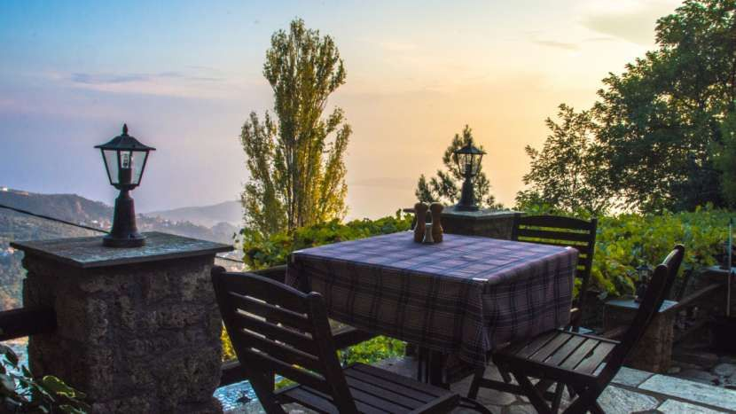
כבר בחודש מרץ החלטתי לחשוב על יעד לחגי תשרי שיוצאים השנה מצויין ויש הזדמנות לחופשה ארוכה תמורת כמעט כלום ימי חופש. אולם התקופה המאוחרת יחסית בשנה (סוף ספטמבר אמצע אוקטובר) שללה לנו הרבה מאתרים באירופה (נראה קצת קר לטיול בפינלנד/ נורבגיה עם הצוציקים שלנו). אז חשבתי על יעדים טרופיים, עד שבעלי הציע שניקח הפעם את "סבא וסבתא" איתנו לחופשה. הצוציקים שלנו כבר מנוסים בטיולים (תאומים בני שנה ועשרה חודשים וזו הפעם החמישית שלהם בחו"ל- ככה זה כשלאמא יש קוצים בטוסיק), אולם הפעם התאומים בגמילה מחיתולים, ובהחלט לא יזיקו לנו עוד 2 זוגות ידיים, ואולי גם קצת זמן "זוגי" לעצמנו.
לאחר התחשבות בשיקולי הלו"ז של כולם מצאנו 10 ימים פנויים בסוכות- קצר מיידי ליעד טרופי, ולכן בלית ברירה החלטנו להסתפק ביוון. מראש החלטנו שלא נעשה בטן גב- אי אפשר לבנות על מזג אוויר מתאים לשחייה בים-בריכה. התלבטנו בין טיסה לאתונה ומשם דרך לפקדה לכפרי זגוריה או טיסה לסלוניקי ומשם נסיעה לחצי האי פיליון. לאחר בדיקה זריזה של טיסות הטיסה לסלוניקי התאימה לנו בול בשעות ובתאריכים, יש לנו יעד!
קצת מאוכזבת מביטול הטיול הטרופי שתכננתי בראשי, פניתי לתכנן את הטיול לחצי האי פיליון, WOW התאהבתי מיד!
חצי האי פיליון, או בשמו המיתולוגי אי הקנטאורים (שלפי המיתולוגיה היוונית חיו בחצי האי הזה), נמצא במרכז יוון, בחבל תסליה, כשמצידו המזרחי הים האגאי ומצידו המערבי מפרץ פגסטיקוס. הפסגה הגבוה ביותר בחצי היא בגובה 1624 מ, ישנם 24 כפרים עתיקים בחצי האי שחלקם נבנו כבר במאה ה-14.
רוב המטיילים משלבים את פיליון עם כפרי זגוריה אולם רק מקריאה על פיליון יש כלכך הרבה דברים לעשות שם שנראה לי חבל לבזבז כלכך הרבה זמן על נסיעות כדי ל"דקור" יעדים, בטח ובטח עם צוציקים שגם ככה הטיול איתם איטי מאוד. בסוף גיבשתי מסלול שכלל שבוע בפיליון, גיחה למטאורה (בשביל אמא) וחזרה לסלוניקי.
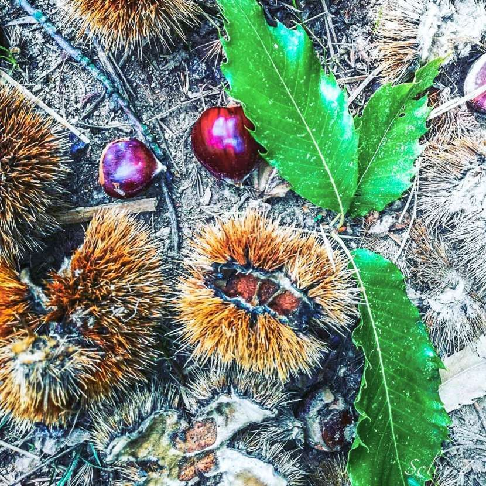
ועכשיו לטיול עצמו:
11.10.19:
יום שישי, אנחנו ממריאים עם ריינאייר מטרמינל 1 בשעה חמש בערב לסלוניקי, הצוציקים עוד הספיקו להיות בגן ומגיעים לשדה רעננים אחרי שנת צהריים, רעננים מספיק כדי להתרוצץ במשחקיית הטרמינל הכמעט ריקה בשעה זו. הטיסה עוברת מהר וחלק ובשעה שבע וחצי אנחנו נוחתים בנמל התעופה.
שכרנו רכב של 7 מקומות דרך rent a car- חברה מקומית בשם surprice, משרדי החברה ממוקמים במרחק נסיעה מהטרמינל וביציאה חיכה לנו נהג השאטל עם שלט. הצטיידנו בשדה בסים מקומי- 30 יורו עבור 7 גיגה (מראש הבאנו איתנו מעין מודם נייד שניתן לשים בפנים את הסים ככה שיהיה לנו WIFI קבוע ברכב). קיבלנו רכב של 7 מקומות כפי שהזמנו, עם 2 כסאות בטיחות מצויינים לצוציקים, היה קצת צפוף עם המזוודות (לכן שמנו את הסבתא בבגאז'), אבל הסתדרנו, קראתי שהכבישים בפיליון צרים ומפותלים לכן לא רציתי לקחת רכב גדול מידי (הקטגוריה הבאה היא כבר מיני וואן). מתחנת ההשכרה נסענו למלון- Ambassador Hotel Thessaloniki שנמצא 3 ק"מ מהשדה. מלון קטן ונחמד עם בריכה וארוחת בוקר, הזמנתי חדר מחובר (משפחתי), ולאחר ששמנו את הצוציקים לישון התפנקנו בפיצה טעימה במיוחד (אולי כי גווענו ברעב).
12.10.19:
בעונה זו של השנה השמש זורחת לקראת שבע וחצי בבוקר (ושוקעת בשבע בערב), לכן הצוציקים פינקו אותנו בשינה עד שמונה בבוקר! ולא רק זה, איך שיצאנו מהחדר זכינו לראות את השמש מטפסת לאיטה בשמיים לבוקר חדש. אחרי ארוחת בוקר מצויינת במלון (שברובה נשארה אצלי על הבגדים בזכות פיצקה), בזמן שסבא וסבתא מבדרים את הצוציקים בהתרוצצות על פני הגשר בבריכת המלון (שקרה מכדי להיכנס לטבילה בשעת בוקר "מוקדמת זו"- תשע וחצי זה מוקדם?!), אנחנו מעמיסים את הרכב בצורה יעילה ונוחה- נסיעה ארוכה לפנינו.
יצאנו לדרך בשעה עשר וקצת, לאחר תדלוק (מחירי הדלק דומים מאוד למחירים בארץ) עלינו לכביש המהיר שהינו כביש אגרה (כביש חדש, נוח ובאמת מהיר, יש להכין מזומן לכל המקטעים של כביש האגרה כי אין שם אופציה לתשלום באשראי). לפי הוייז מצפה לנו נסיעה של 3 שעות עד הוילה בצאגראדה (הצד המזרחי של פיליון), אולם אין סיכוי שנוכל לעשות את הנסיעה באופן רציף עם הקטנים. לכן בשעה 12 הגענו לאיזור שמורת האולימפוס (ההר הגבוה ביוון ולפי המיתולוגיה היוונית משכן האלים) ולעיירה ליטוכורו. עצרנו שם לארוחת צהריים ולשיטוט בעיירה שקראתי שהיא נעימה ביותר. לצערי הרבה מסעדות היו כבר סגורות (עונת התיירות נגמרה), ישבנו במסעדה מקומית בכיכר הראשית, האוכל היה טעים ומגוון ולא יקר, את פסגת האולימפוס לא ראינו. לכל מי שמעוניין לטייל בשמורת האולימפוס זה המקום בשבילו.
העיירה ליטוכורו:
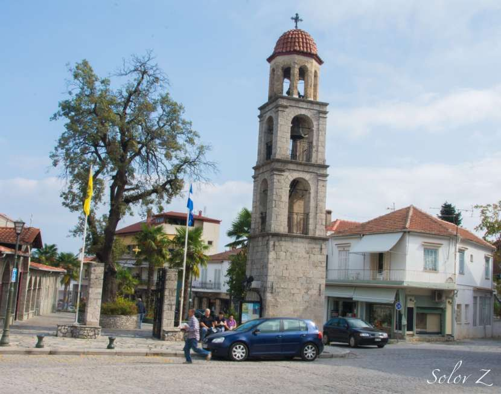
שבעים, המשכנו בנסיעה עד לעיירה וולוס (שער הכניסה לפיליון) שם הצטיידנו בסופר LIDL (רשת גדולה באירופה) כי הייתי די בטוחה שלא נמצא סופרים גדולים בפיליון (וצדקתי, יש שם רק מינימרקטים), בזמן שהבחורים עושים קניות, הצוציקים היו עסוקים בעשיית פיפי בסירים בחניה...טיפ לנסיעה ארוכה עם צוציקים- במבה! המציל הלאומי כשהם כבר איבדו את זה…
משם המשכנו בנסיעה, ואז נכנסנו לפיליון- אין מילים לתאר את היופי, כאילו נכנסנו למדינה אחרת, מהנוף הצחיח שליווה אותנו עד כה, פתאום אנחנו ביער אירופאי, הרים נישאים ומתחתינו הים הכחול! והעצים, העצים, יופי כזה עוד לא ראיתי, עליהם מצהיבים- שילוב מקסים של ירוק וצהוב שמצילים על הכביש ויוצרים מעין פרוזדור ודרכו חודרות קרני השמש המעריבה, עולם אחר. בכל פיתול ופיתול של הכביש (ויש המון) נגלה לנו יופי אחר.
עברנו את העיירה פורטריה וממשיכים לתוך פיליון, חוצים את ההר בחאניה (אתר הסקי בחורף),חאניה אגב אינה נחשבת לכפר בפיליון אלא שימשה במקום למנוחת לילה עבור כפריים שחצו את ההר ולנו במקום כעצירת ביניים, עד שמגיעים לבסוף לעיירה שלנו- צאגראדה ולווילה המקסימה- Sunrise Tsagkarada. מדובר במתחם מדהים של 2 בתים, 4 יחידות דיור, בריכה נחמדה ופינת ישיבה חביבה. קיבלנו את וילה ולריה, וילה מקסימה בת קומותיים עם 2 חדרי שינה גדולים 2 שירותים סלון ומטבח מהמם, שתי מיטות לצוציקים כולל מצעים חיכו לנו, ובכלל העיצוב פשוט יפיפה חמים נעים וביתי.
הצוציקים מוצאים לוח שחמט ענקי בחוץ ומתחילים לסדר את הכלים בזמן שאנחנו מארגנים את הדברים. בעל הדירה המקסים כבר שלח לנו בווטסאפ המלצות למסעדות טובות בסביבה, אנחנו גוועים ברעב והחלטנו לבקר ב-Apalou מסעדה עם מטבח איטלקי, נעימה וביתית ואוכל מצויין. שבעים ומרוצים חזרנו לדירה לשנת לילה מצויינת.
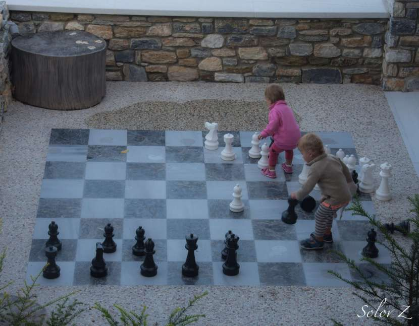
13.10.19:
הצוציקים העירו אותנו בשבע וחצי, בדיוק בזמן לצפות בזריחה המרהיבה מחלונות הדירה. אחרי התארגנות וארוחת בוקר ביתית, יצאנו לאטרקציה הראשונה שלנו- חוף דאמוחארי.
מדובר בכפר פיצפון הנמצא כ3 ק"מ אווירית מהעיירה שלנו, אולם כמו כל הכפרים בפיליון כל מה שנראה קרוב בפועל לא כלכך קרוב- צריך לעלות להר ולרדת ממנו מה שמאריך את הנסיעה לדאמוחרי לכמעט חצי שעה.
דאמוחארי הינה עיירה פצפונת עם 2-3 מסעדות (שסגורות בעונה זו, רק הקפיטריה פתוחה), העיירה מפורסמת בזכות הסרט מאמא מיה שצולם בעיירה, ומריל סטריפ הכוכבת הראשית שנהגה לשתות קפה בקפיטריה של העיירה.
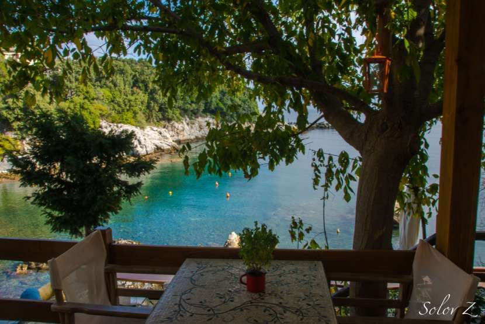
אנחנו יורדים לעיירה בדרך פתלתלה ומגיעים לחניון קטן, משם יש שביל קצת תלול (להליכה עצמאית של הצוציקים, בשביל זה יש מנשאים!) שמוביל מטה לעיירה ולמעגן היפיפה שלה, אנחנו מוקסמים מהמעגן, ממשיכים ללכת בשבילים הצרים כשמחצרות הבתים מציצים שיחים ועצי זית והשמש הזורחת מבצבצת מבין הענפים, ממש בכניסה אנו מגיעים לקפיטריה המפורסמת וזוכים לתצפית נוספת על המעגן היפיפה.
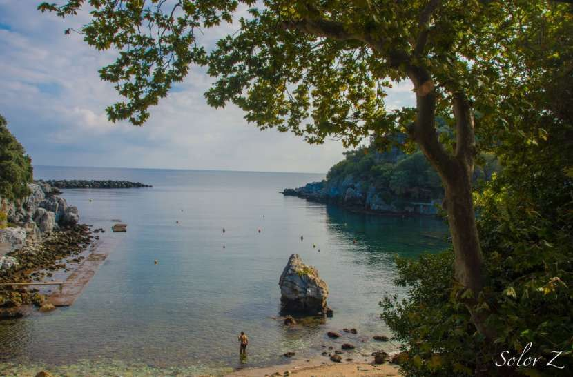
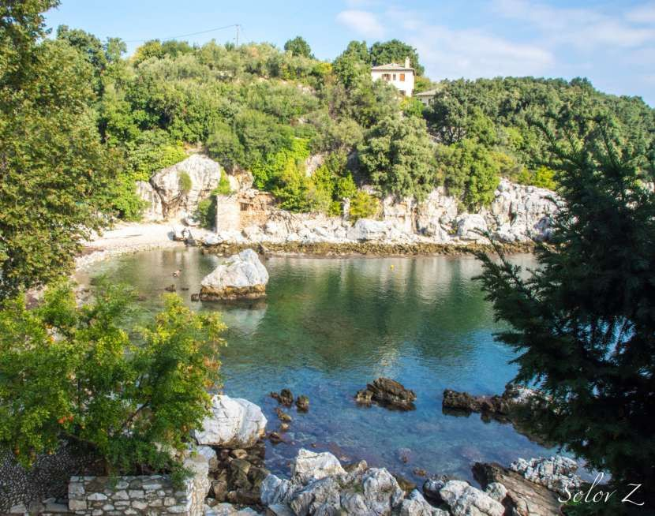
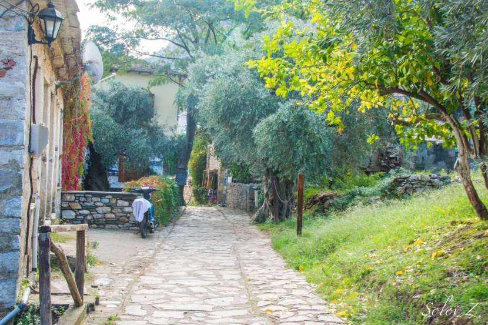
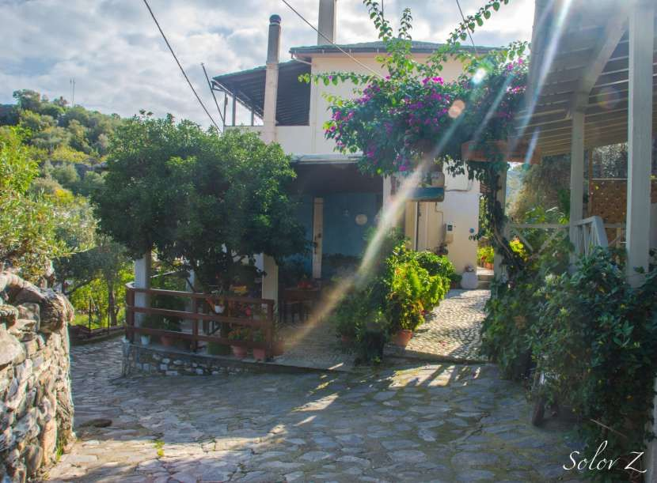
אבל לא באנו לשבת ולשתות קפה, באנו לשחות! ולכן אנו ממשיכים עם השביל עד לחוף דאמוחרי המהמם. המים שקופים עד כדי כאב ומזמינים כלכך! הצוציקים מיד מסתערים לטבול רגליים בקריאות "ים! ים!" נרגשות.
המים אמנם מזמינים, אבל הם גם קפואים קפואים למגע, צריך לקחת אומץ בכדי להיכנס, אז בזמן שהצוציקים עסוקים עם סבא וסבתא בזריקת אבנים לתוך המים, אני אוזרת אומץ ופשוט צוללת פנימה, ואיזה כיף!!! מיד מתרגלים לקור וברגע כשיוצאים כלכך נעים!!! עם התלהבותי גם סבא וסבתא מצטרפים לטבילה ואיתם גם עוד כמה ישראלים שנמצאים על החוף (בעונה זו נראה שהתיירים היחידים באי הם ישראליים).
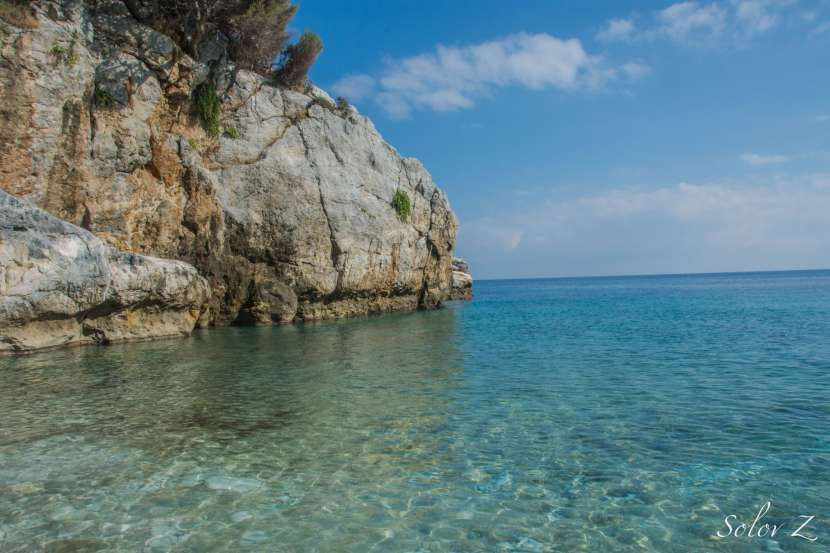
לא רחוק מהחוף יש סלע שניתן לטפס עליו וליקפוץ ממנו למים, חוויה שלא הספקתי לעשות- צריך להשאיר משהו לפעם הבאה.
וככה העברנו שעתיים בכיף- שוחים, זורקים אבנים למים, צוציקים תרגלו גם יוגה על החוף עם סבתא, ככה זה כשיש חוף מדהים, לא רוצים ללכת, אבל מה לעשות הקטנים צריכים לאכול צהריים וללכת לישון שנ"צ, אחרת אוי ואבוי לנו, יהיו לנו 2 בובות צ'אקי!!!
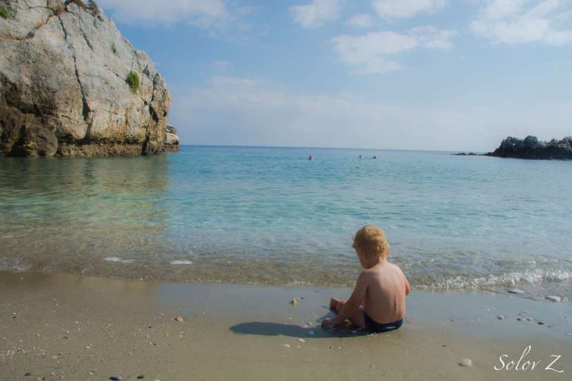
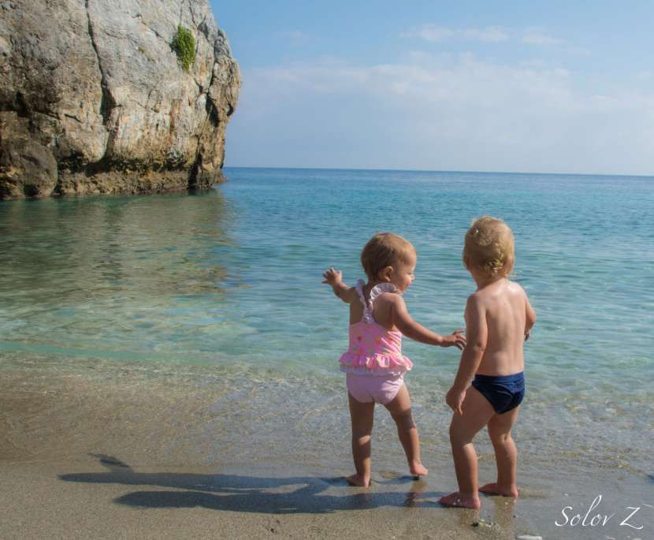
מתחילים במסע חיפוש מסעדה, לתומי חשבתי שנוכל לאכול בעיירה אבל כמו שנוכחנו הכל סגור למעט הקפיטריה וכריך לא ממש מתאים לארוחת צהריים לשני טרורטיסטים קטנים בני שנה ועשר. החלטנו לנסוע חזרה לכיוון העיירה שלנו שם היו מסעדות, ואז נזכרנו בהמלצה שקיבלנו מזוג ישראלים על החוף על מסעדה שנקראת Drosia, מסעדה המנוהלת ע"י זוג מבוגר שמבשלים לבד את כל המנות, המסעדה נמצאת ממש על הכביש הראשי לכיוון צפון (זגורה), ואכן מיד לפני שאנו עולים חזרה לכביש הראשי (ביציאה ממורסי) אנו רואים שלט שמצביע על המסעדה, פונים ימינה ומיד אחרי תחנת הדלק מגיעים למסעדה (המסעדה השניה אחרי תחנת הדלק). כמו רוב המסעדות בפיליון גם כאן יש מרפסת עץ הצופה אל הים והנוף משגע.
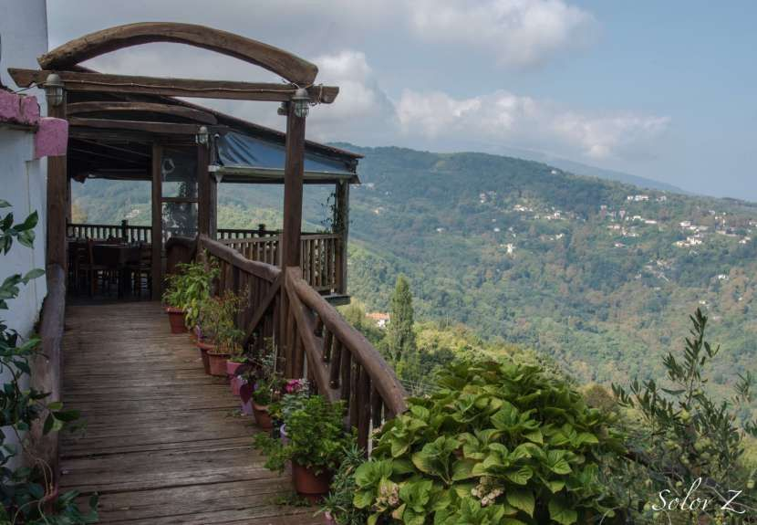
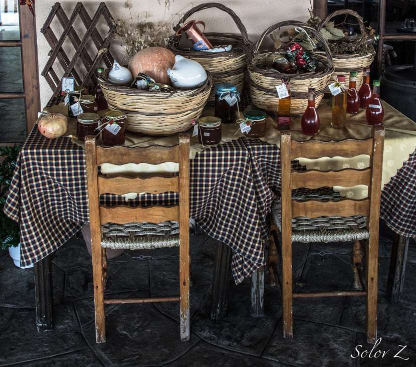
אנחנו רעבים ואז קולטים שהצוציקים שלנו חורפים להם את שנת הצהריים, מה עושים? שומרים בתורות. בעלי סבא וסבתא הלכו להזמין מנות ולאכול בזמן שנשארתי עם הקטנים, ואז פשוט שמרנו על הקטנים בתורות…(מה לעשות אני חוששת להשאיר אותם ברכב בלי אף אחד).
המסעדה פשוט מעולה, המנות מדהימות, הכל טעים! הנוף משגע ואין כמעט אנשים, זכינו לארוחת צהריים מדהימה והצוציקים עדיין ישנים, אז לקחנו להם כמה מנות איתנו שיאכלו בוילה כשיתעררו ונסענו חזרה לצאגראדה ולוילה שלנו, לא אחרי שהצטיידנו גם בריבה תוצרת ביתית שמיוצרת במקום.
אחרי מנוחה קצרה וארוחת צהריים מאוחרת לילדודס (שישנו שעתיים באוטו והתעוררו ברגע שחנינו בוילה), החלטנו לצאת ולחקור את צאגראדה ולהתרשם מעץ הדולב העתיק שהוא האטרקציה המפורסמת של העיירה.
העיירה צאגאראדה כמו רוב עיירות פיליון נוסדו במאה ה-11, בהתחלה רובן היו סמוך לחוף אך בגלל פשיטות של פיראטים טורקיים העיירות עברו לתוך ההרים. צאגראדה מפורסמת גם בזכות מבנים רבים שהשתמרו בה וכמובן בזכות עץ הדולב.
העץ נמצא בכיכר העיר מול הכנסייה, לידו יש בית קפה קטן, ומתחת לעץ נפרס לו יער חביב. העץ מאוד מרשים, גזעו עבה כלכך ואחד הענפים שלו אפילו נתמך בקיר מיוחד שבנו עבורו, אחרת היה קורס, השילוב של העץ עם הכנסיה ממול ועלי השכלת הפזורים בכיכר יוצא אווירה קסומה. הצוציקים מיד פונים למלאכת איסוף והשלכת העלים לכל כיוון אפשרי תוך קריאות שמחה אדירות, אחרי שניקינו מעט את הכיכר מעלים, פנינו למסלול הליכה נחמד ביער שנמצא ממש מתחת לעץ הדולב (פשוט יורדים במדרגות והולכים שמאלה ומשם לאורך השביל שמוביל אל תוך היער). את המסלול לא סיימנו אבל היה לנו מאוד נחמד לצעוד בין העצים הירוקים ועלי השלכת הפזורים מטה, לעבור גשרוני עץ מעל פלג קטנטן.
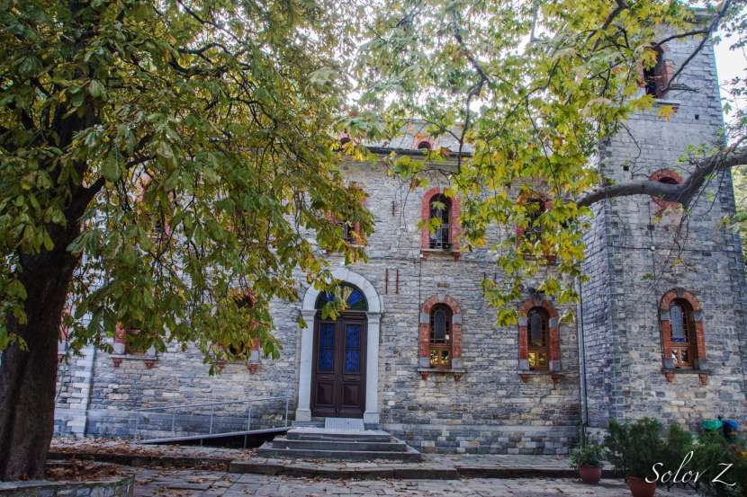
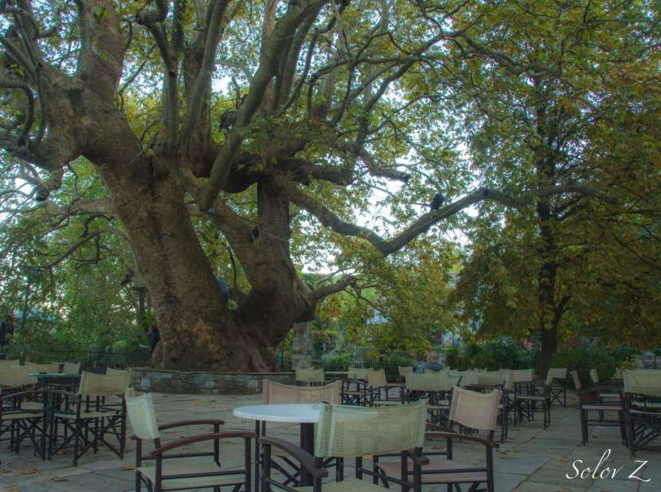
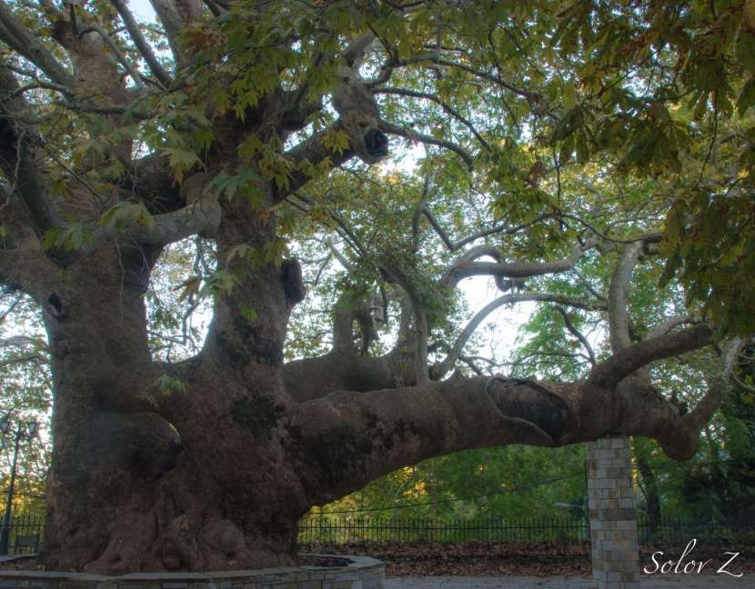
כלכך נהנינו מאווירת המקום שהחלטנו לנשנש עוגה בבית הקפה הקטן, הצוציקים פשוט היו בעננים אחרי עוגת שוקולד ועוגת תפוזים!
שבעים ומרוצים חזרנו לוילה לארוחת ערב תוצרת סבא וסבתא, מקלחות ולישון.
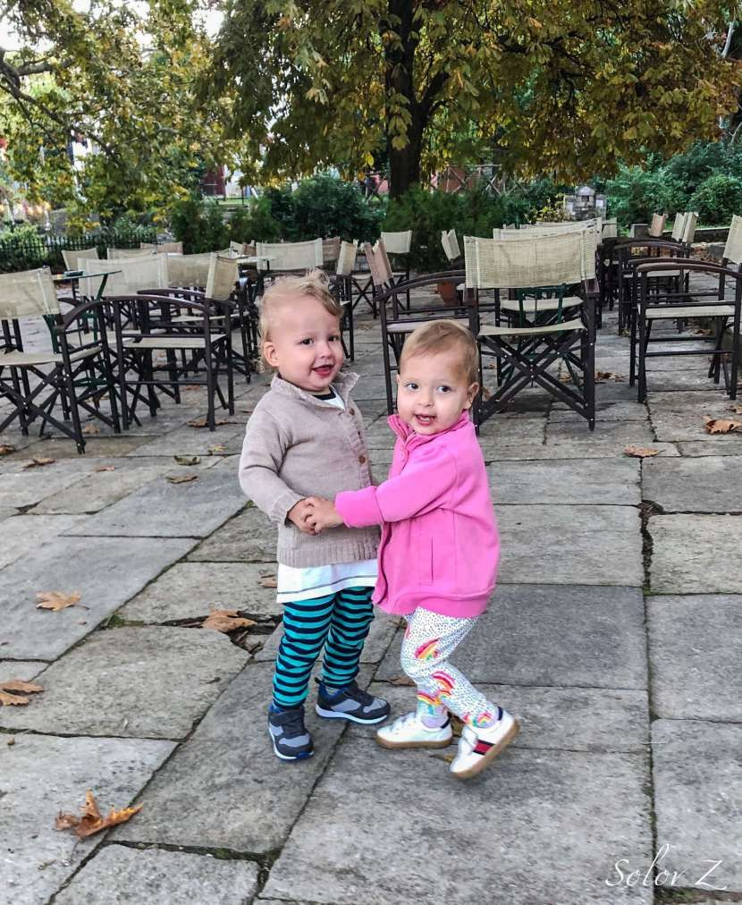
14.10.19:
שוב הצוציקים פרגנו לנו בשינה והתעוררנו לעוד זריחה מרהיבה (הרבה יותר מרהיבה מאתמול)! הנה:
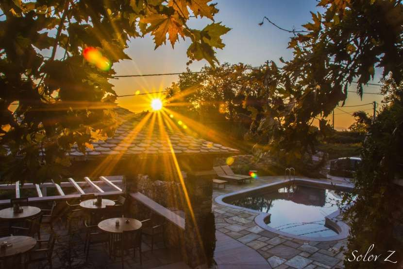
בזמן שסבא וסבתא מתארגנים אני והצוציקים עושים סדר במתחם הוילה ומסדרים מחדש את כלי השחמט. אחרי שכולם מוכנים אנחנו נוסעים לעוד חוף מפורסם- מילופוטאמוס.
הפעם החוף נמצא ממש קרוב לוילה, רק עשר דקות נסיעה. הדרך משתפלת מטה והנה לו מפלון קטן:
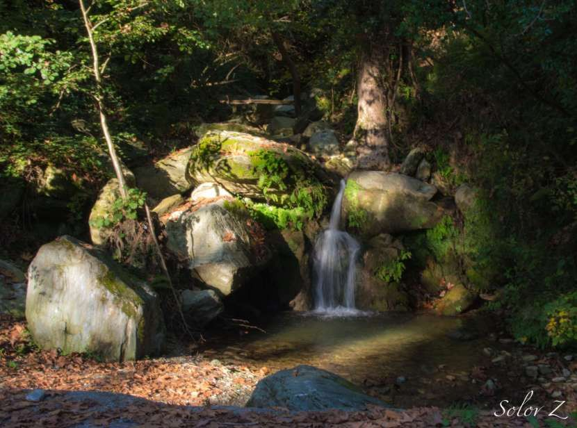
הגענו למגרש חניה גדול וממנו נשקף נוף מדהים של הים והחוף- המים בצבע טורקיז בוהק שלא ניתן לתאר במילים, פשוט משגע. ניתן לרדת לחוף בשתי דרכים- דרך השביל העתיק- משמאל למגרש החניה או דרך המסעדה ובמדרגות מצד ימין של החניה. אנחנו הולכים על המדרגות (קצת פחות תלול), הצוציקים כבר רגילים לקפוץ למנשא, וקדימה לדרך.
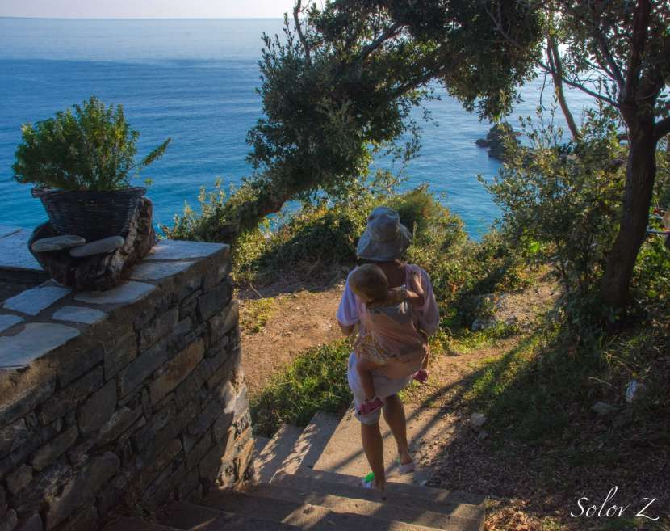
המסעדה הקרובה לחניה היא מסעדת דגים שבעל הדירה המליץ לנו עליה, ושם חשבנו לאכול צהריים, לידה יש בית קפה מקסים שצופה על הים, בשעה תשע וחצי בבוקר שני המקומות די שוממים. אנו יורדים במדרגות (ממש לא נורא), עוברים דרך הצוקים ושם רואים את הדייגים המקומיים עסוקים בלדוג לנו את ארוחת הצהריים שיגישו במסעדה. אחרי אין ספור תמונות הגענו לחוף.
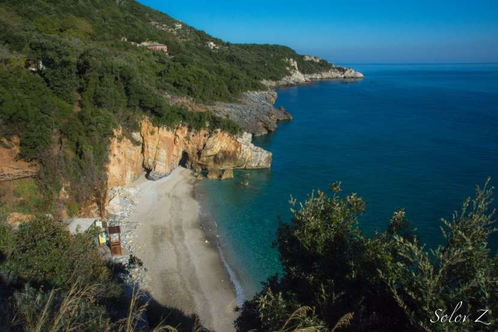
לא סתם החוף מכונה אחד החופים היפים ביוון כולה, הוא פשוט מדהים! הוא מוגן ע"י צוקים שאחר הצהריים מצלים אותו, אבל בשעה זו יש שמש ואיזה כיף כי כבר די קריר בצל. יש פתח באחד הצוקים שמחלק את החוף לשניים, והמים פשוט תענוג, צלולים צלולים וטורקיזיים- הרבה יותר יפה מחלק מהחופים התאילנדיים שהינו בהם!
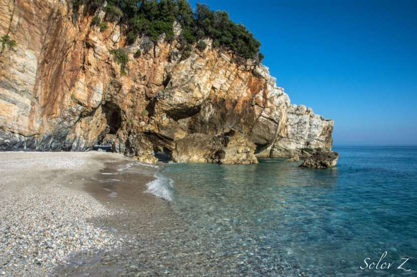
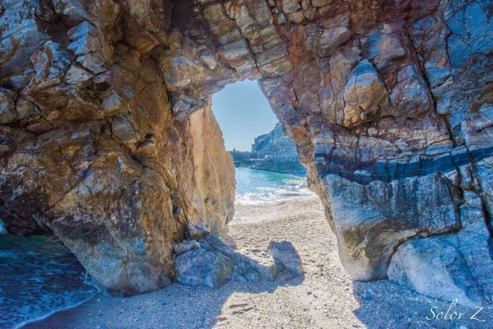
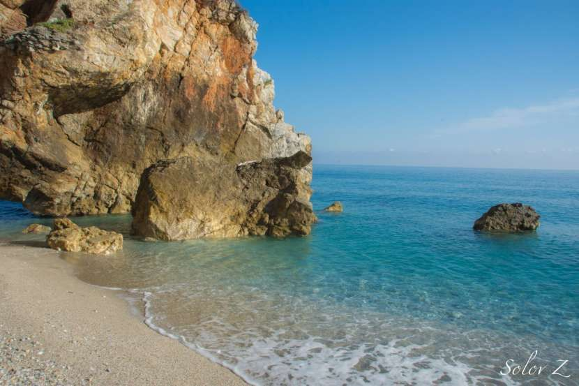
אז גם הפעם העברנו כמה שעות טובות בחוף, הצוציקם מאושרים- זורקים אבנים למים, נכנסים לטבילה. רק טיפ קטן וזה להביא נעלי ים כי יש אבנים וקצת מקשה ללכת ולהכנס למים- לקטנים זה לא מפריע, יש ידיים של אבאמא.
שעת צהריים הגיעה ואנחנו עולים למסעדה- Aggelika Fish Taverna שכאמור הומלצה ע"י בעל הוילה וכן גם בעלת המלצות מצויינות בגוגל, הנוף מקסים, השירות אדיב אולם משום מה "נפלנו" על מנות לא הכי טובות בלשון המעטה- הדגים היו לא טעימים בכלל ושאר האוכל סביר וזהו, המחיר- בהשוואה לשאר המסעדות שאכלנו בהם שהיו הרבה יותר טעימות, היה די יקר! אבל כאמור אולי פשוט נפלנו על יום עם שלל דגים פחות מוצלח… קצת מאוכזבים אנו חוזרים לוילה לשנ"צ של הצוציקים ובזמן הזה אנחנו גם זוכים לזמן מנוחה ומתפאננים לנו במתחם הבריכה (המים בבריכה קרים מידי לשחיה לטעמנו), אני וחמותי שוטטנו קצת ברחובות הסמוכים- אין יותר מיד דברים מעניינים.
כשהצוציקים התעוררו החלטנו לנסוע ולחפש את גשר האבן הישן, מסלולון נחמד ביער רבע שעה נסיעה מהוילה שלנו. כיוונתי את נווט הגוגל לבית הקפה הקטן שליד הגשר (כי הוייז לא מצא), וכשהגענו למקום גילינו שבית הקפה סגור וכך גם השביל לשם, זה נראה לי תמוה כי בכל מקום מפרסמים את הגשר כאטרקציה, לא הגיוני שהדרך סגורה, אולם בגלל השעה היחסית מאוחרת החלטנו לחזור לעיירה ולשוטט שם, אולי נמצא פינות חמד. בסוף לא מצאנו משהו מעניין- למעט המון עלים שאותם הצוציקים נהנו להשליך לכל עבר, וחזרנו לעץ הדולב, שם אפשר לשחרר את הצוציקים מבלי חשש מרכבים או שבילים משופעים. בגלל שהיום יום שני הכיכר שוממת ובית הקפה סגור- משמע כיכר שלמה רק לצוציקים, וכמה שהם נהנו, אני חושבת לגבות תשלום מהעירייה של צאגארדה על ניקיון הכיכר מעלים. עייפים ומרוצים חזרנו לוילה לארוחת ערב, מקלחות ולישון.
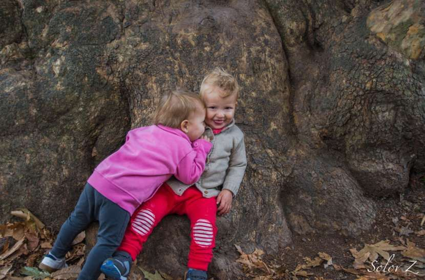
15.10.19:
היום אנו נוסעים מעט רחוק יותר, לחוף plaka. מדובר בחלק הצפוני של חוף agios yoanis. אגיוס יואניס מחולק ל-3 חופים: פלאקה הצפוני עליו קראתי שהוא מדהים ושיש שם "שכשוכיות" טבעיות מושלמות לקטנטנים, חוף אגיוס יואניס עצמו- חוף הטיילת עם המון בארים ומסעדות, וחוף פאפא נרו שגם הוא מהמם אולם עליו נוותר הפעם (ניתן להגיע ברגל דרך גשר המקשר בין החופים).
נסיעה של חצי שעה מביאה אותנו לאגיוס יואניס, אולם בכדי להגיע לחוף פלאקה ניתן או ללכת ברגל מחוף אגיוס (לחנות ליד המעגן סירות וללכת צפונה) או לחלופין לנסוע ולחנות במלון עדן EDEN, עם הקטנטנים אנחנו בוחרים באופציה השניה (שהומלצה ע"י מטיילים רבים גם כן). כיוונו את הוויז למלון EDEN והתחלנו בנסיעה, ואמאל'ה איזה נסיעה… הכביש ממש צר ומשופע, עד כדי שבעלי חשש שפשוט לא נצליח לעלות את השיפועים האלה חזרה עם הרכב ה"גדול" שלנו (חששו לא היה מוצדק כי משאיות עברו שם בלי בעיה). אחרי כמה דקות (ושיערות לבנות חדשות לבעל) אנו מגיעים למלון שנראה ריק (ככל הנראה סגור כי העונה נגמרה). בעונה החניה שם עולה 6 יורו, אולם עכשיו החניה חינם- כי אין אף אחד לגבות את התשלום.
הנוף מהחניה של מלון עדן:
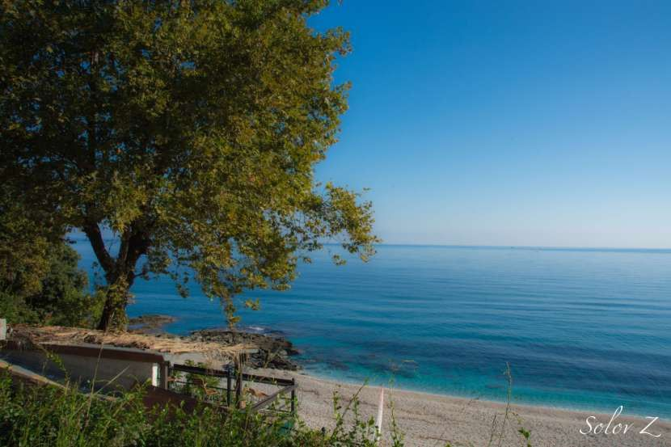
הנוף משגע- עצים ושיחים ירוקים כמעט ונושקים למים הטורקיזיים והצלולים, אפשר לחשוב לרגע שזה חוף טרופי (רק במקום חול לבן יש אבנים לבנות). אנו יורדים מטה לחוף דרך מסעדה שוממת, טיפ- לחוף זה חובה נעליים כי ממש כואב ללכת יחפים בגלל האבנים הרבות. אנחנו מתמקמים ליד כמה מה"שכשוכיות" והצוציקים מיד פונים למלאכת השלכת האבנים אל תוך המים. הפעם לא שחינו כי היו המון סחפת עצות במים, אבל נראה נחמד מאוד לשחות שם בין האבנים ולשכשך במים הרדודים. היינו ממש לבד בחוף כשמידי פעם חצו מטיילים את הדרך להצטלם ולחזור חזרה. אחרי שמיצינו נסענו לאגיוס יואניס לטיול בטיילת- קיונו למצוא מקום לאכול אולם בין שפע המסעדות חלקן היו סגורות ומה שהיה פתוח לא נראה לנו כזה מזמין, אז החלטנו לנסוע חזרה לכיוון הוילה ולמצוא מסעדה בדרך, ובסוף עצרנו שוב ב-Drosia היכן שאכלנו שלשום- כשטעים כלכך אפשר גם לחזור על החוויה! וחוץ מזה אז הצוציקים ישנו, עכשיו הם ערים ויכולים לאכול איתנו. שבעים נסענו לוילה לשנ"צ של הילדודס.
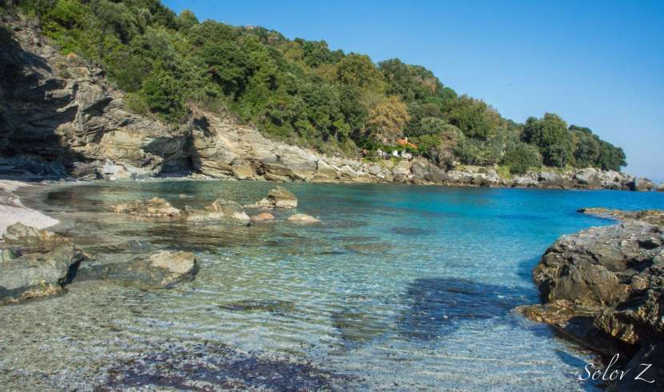
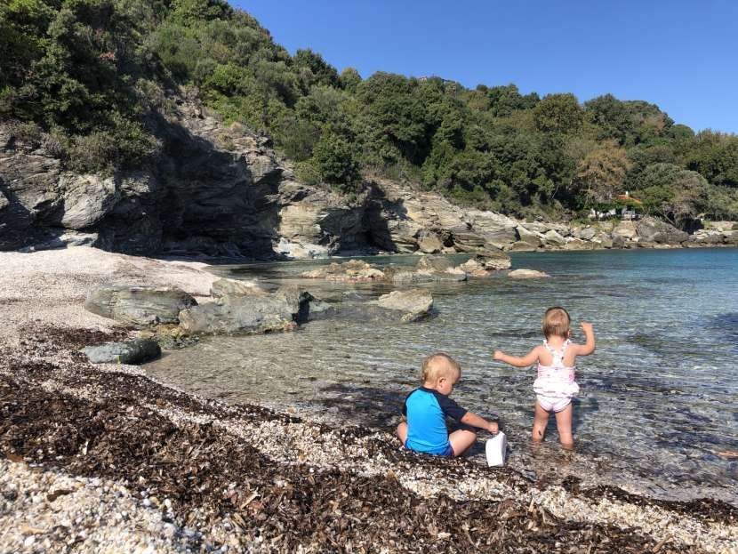
הטיילת בחוף אגיוס יואניס:
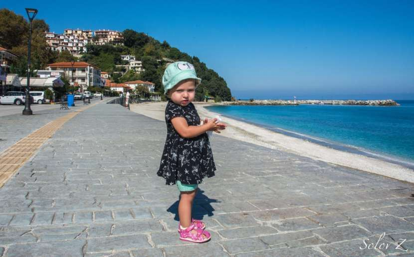
עוד תמונה של מסעדת Drosia והמעגן של אגיוס יואניס ברקע:
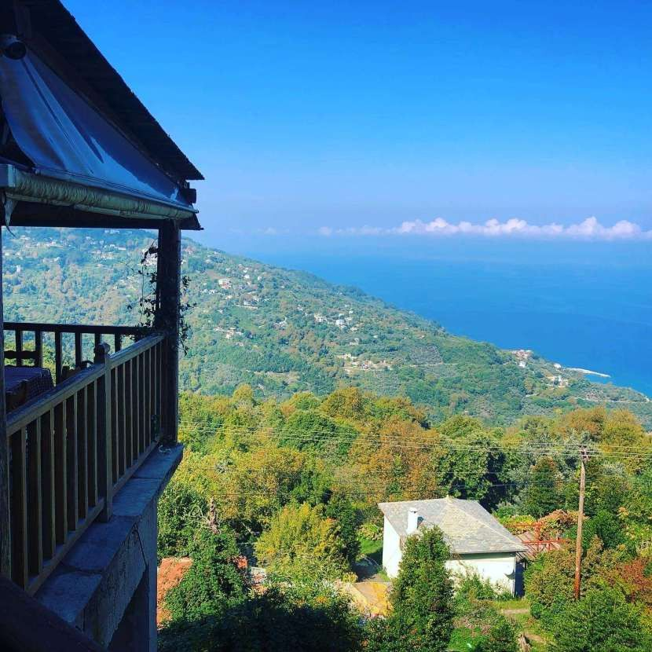
הפעם בזמן השנ"צ החלטתי לנצל את סבא וסבתא לבייביסיטר בזמן שאני ובעלי נסענו לבדוק את חוף פאקיסטרה (שנמצא ממש כמה דקות נסיעה מהוילה). מדובר באחד החופים היפיפיים בפיליון וביוון כולה, אולם בניגוד לאחרים הוא יחסית פחות נגיש. החוף ממש קרוב לוילה- שבע דקות נסיעה במורד הכביש המפותל, מגיעים לחניה פצפונת (איך לעזאזל מסתדרים פה בשיא העונה אין לי מושג). מהחניה יש שביל הליכה שיורד עד החוף, קראתי שמדובר בהליכה בינונית של 20 דקות, בפועל לקח לנו אולי עשר דקות לרדת, אולם זה לא מתאים עם ילדים בגיל של הצוציקים שלנו ללא מנשא מתאים (מזל שהם נשארו לישון בוילה). כבר מלמעלה רואים את רצועת החוף הבתולי בין שני המצוקים, בשעת צהריים זו החוף מוצל לגמרי ע"י ההרים והמים צלולים עד כדי כאב (עד כדי כך שמלמעלה ניתן לראות את האבנים בקרקעית).
החוף היה כמעט שומם, למעט 2 זוגות צעירים (אחד מהם היה עם תינוק! בדיוק כשבעלי אמר שאני משוגעת שרוצה לקחת לכאן את הילדים, טוב לדעת שאני לא המשוגעת היחידה). אני ניצלתי את הזמן לטבילה, ואוו איזה מדהים זה לשחות במפרצון בין צוקים ענקיים מכל עבר ולמטה לראות שלל דגים, קיפודי ים וכו וכל זה מבלי לצלול בכלל….עד כמה שמתלהבים מחופי תאילנד, מניסיון שלנו החוף הזה לוקח את מרבית חופי תאילנד בענק!
לא יכלנו להישאר הרבה זמן אז אחרי שעה וקצת התחלנו את ההליכה חזרה, קצת יותר קשה לעלות מלרדת אבל ממש לא נורא, עשר דקות ואנחנו למעלה (לקראת הסוף השיפוע קצת תלול אבל קצת מאמץ ועולים בקלות).
חוף פאקיסטרה מלמעלה:
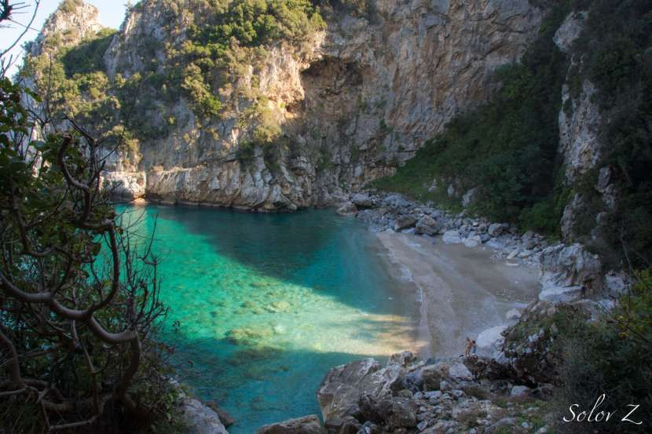
ומלמטה:
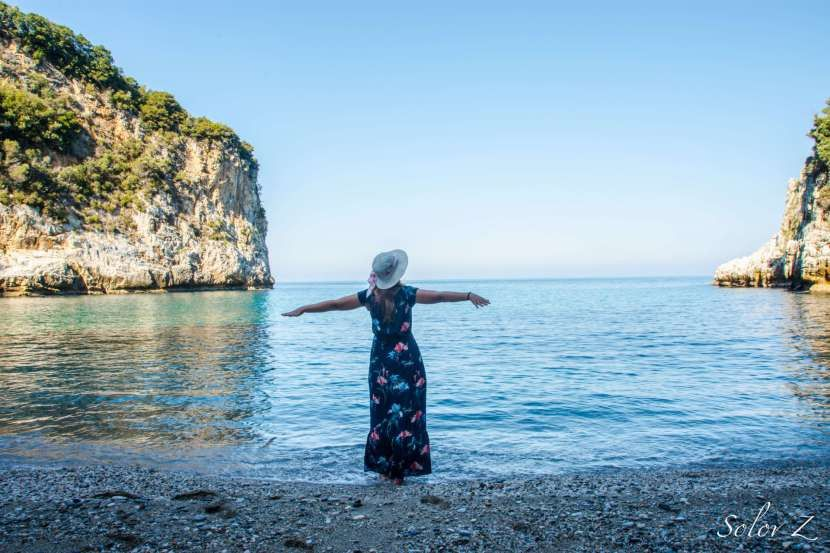
חזרנו לוילה בדיוק בזמן להעיר את הקטנים מהשנ"צ. לא תכננו לנסוע לשום מקום הערב (יש מלא אוכל בבית) אז החלטנו לשוטט בסביבת הוילה, גילינו שהעיירה בנויה בטראסות כשהשבילים העתיקים מחברים ביניהן. אז מצאנו לנו ערימת עלים והצוציקים היו בעננים. עוד יום מוצלח הגיע לסיומו.
צוציקים מאושרים בתוך ערימת עלים:
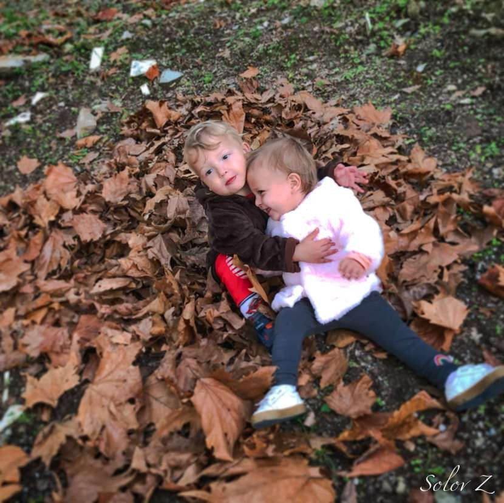
16.10.19:
היום החלטנו על יום בטלה בחוף, במקור תכננתי כלכך הרבה דברים- לנסוע לרכבת הקיטור במיליס (שעה נסיעה מהוילה), אולם הרכבת פועלת בעונה זו רק בשבת וראשון (פספסנו), לנסוע לטריקי (השפיץ הדרומי של חצי האי פיליון), אבל בעלי התנגד לבלות יום שלם ברכב. טוב לפעמים צריך לוותר על כמה נקודות סימון ופשוט לנוח ולהנות מהרגע וזה מה שתכננו לעשות היום.
נסענו למילופוטמוס- החוף שכולנו אהבנו כי הוא ממש קרוב אלינו ויפיפה, גם בפעם השניה שלנו שם אנו מתפעלים מהיופי, שוב משוטטים לחוף השני שמופרד ע"י הצוק, מצטלמים, שוחים, רואים דגים במים, הצוציקים מאושרים עד הגג וגם אנחנו.
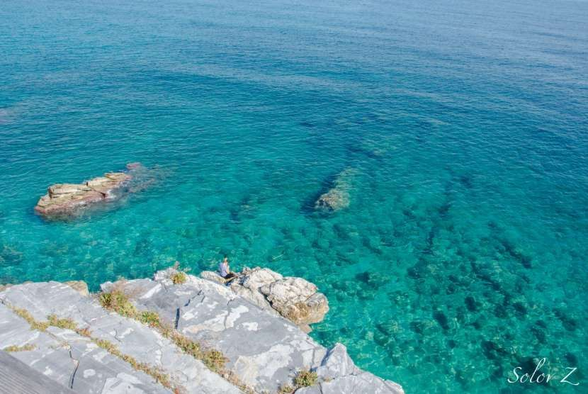
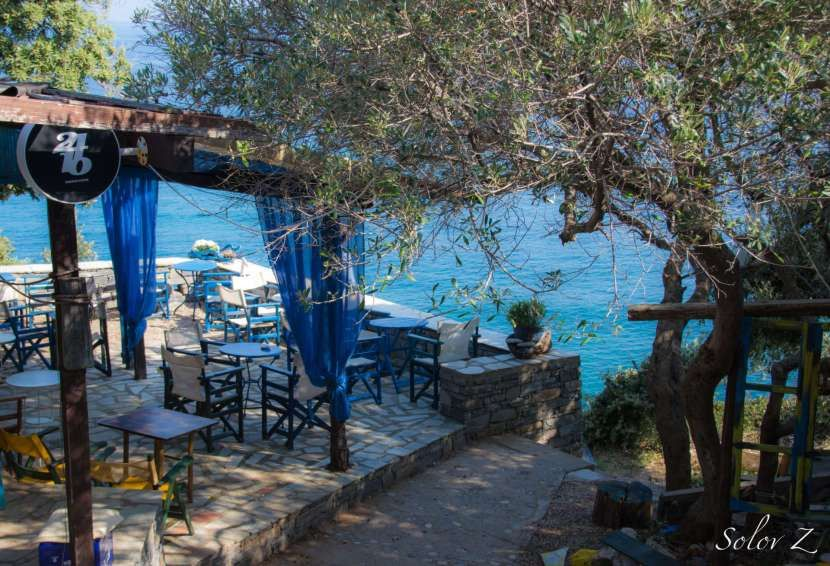
לקראת הצהריים החלטנו לאכול בוילה ולא במסעדה, סבתא מתעקשת שמסיים את כל האוכל כי אנחנו עוזבים מחר… גם הפעם אנחנו זוכים לפרגון זמן זוגי (בעלי היה מעדיף לשנצנצ אבל איך שאומרים- happy wife= happy life) ולכן אנו יוצאים למצוא את גשר האבן העתיק שלא הצלחנו לאתרו ביום השני שלנו כאן.
הפעם עצרנו את הרכב כ-200 מטר מבית הקפה ובשיטוט בשולי הכביש (בצד של בית הקפה, קצת לפניו- למי שמגיע מכיוון צאגאראדה) ושם אכן נמצא שבילון מכוסה עלי שלכת שמוביל מטה. התחלנו לצעוד וממש תוך כמה דקות נגלה לפנינו הגשר, או יותר נכון מתחתינו כי השבילון עובר על הגשר. ירדנו למטה לצלם אותו, למי שרוצה להמשיך לטייל אפשר ללכת ביער לטיול חביב מאוד, אנחנו ישבנו קצת על הגשר, שיחקנו עם עלי השלכת הפזורים בכל מקום וספגנו את אווירת היער מסביבנו, רק אנחנו והטבע- כבר מזמן שלא היינו סביב שקט שכזה.
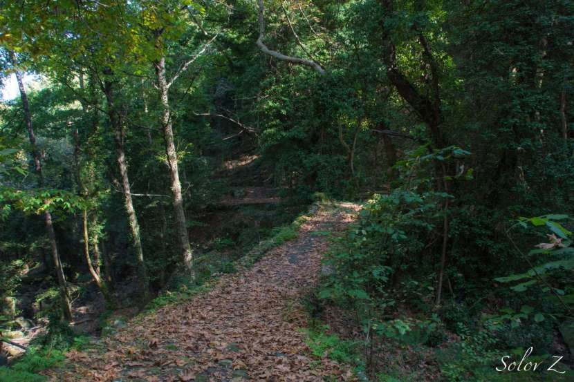
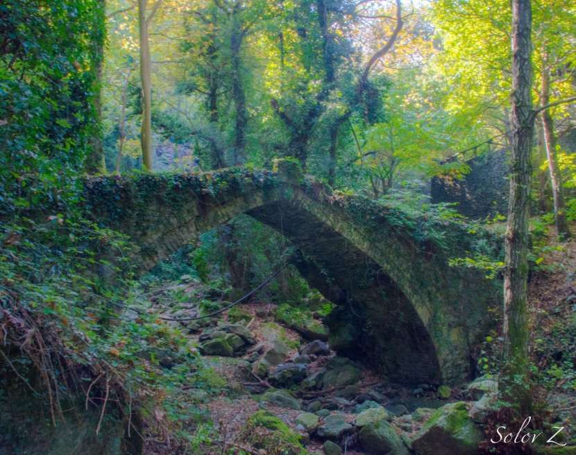
מצאנו ערמונים
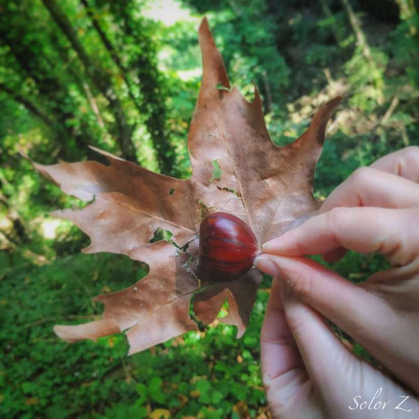
משם רצינו לעבור במאפיה (ראינו שלט בדרך) אולם היא היתה סגורה, כך שנאלץ לחיות קצת בלי פחמימות.
חזרנו לוילה להעיר את הקטנים, עכשיו משהבנו איך העיירה בנויה אז נסענו לכיוון העץ העתיק ומשם פשוט טיילנו בשיבלים בין הטרסות השונות. את ארוחת הערב החלטנו לאכול באחת מהמסעדות המומלצות בעיירה- Alekas, הנמצאת ממש מול צומת הכניסה לצאגאראדה. לא סתם המסעדה מומלצת, האוכל שם פשוט תענוג, החל בסלט תפוחי אדמה למנת פתיחה, מנות הבשר השונות (חובה לנסות את הבקר עם הערמונים פשוט אלוהי!) ועד לקינוח שאני והצוציקים טרפנו בהנאה רבה! שבעים ומרוצים חזרנו לוילה למקלחות והשכבות. כשהצוציקים ישנים פתאום שמתי לב שכרטיס האשראי שלי חסר, אחרי סריקה בכל הבית והרכב הסקנו שכנראה נפל במסעדה כשהצוציקית שיחקה לי עם הטלפון, נסענו חזרה למסעדה (אני כבר מריצה בראש את הסרט שיהיה לי בחזרה בארץ להעביר את כל התשלומים), אבל איזה מזל, זוג נחמד מצא את הכרטיס ושמר עליו, בהחלט היה לי יותר מזל משכל, זהו מאז האירוע הכרטיס עבר להתגורר במקום אחר שאינו נגיש לצוציקים.
בתמונה- צועדים באחד משבילי העיירה צאגראדה עם הים ברקע
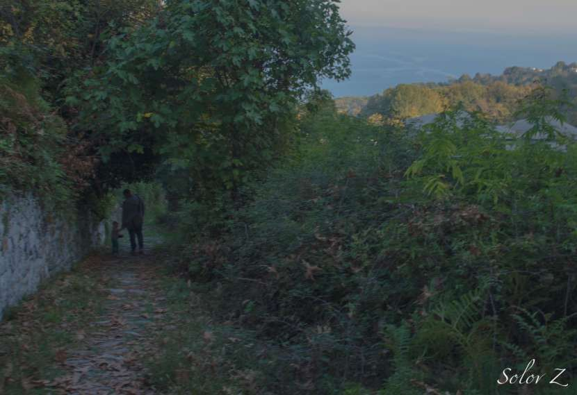
17.10.19:
היום אנחנו נפרדים מדירתנו היפה בצגאראדה ונוסעים לפורטריה שנמצאת בצד המערבי של פיליון. אבל לפני שאנחנו עוזבים את הצד המזרחי החלטנו לבקר ב-stream at Poros מקום שבעל הדירה המליץ עליו, נחל זורם ובו בריכות שניתן לשכשך בהן. המקום נמצא ליד זאגורה, העיירה הגדולה שפיליון שמתמחה בגידול תפוחים.
נסיעה של 50 דקות בכבישי פיליון המפותלים מכוסי עצי השלכת והשמש שמציצה לפרקים, משרה תחושה של נסיעה באגדה. לזאגורה עצמה לא נכנסנו אלא סטינו לפי הכניסה לעיירה כפי שאמר לנו הוויז.
שילוט למקומות יפים זה לא הצד החזק של היוונים (לפחות לא בפיליון), וכך יצא שהגענו לנקודה לפי הוויז (בדקנו גם עם גוגל וזו אותה הנקודה), לא ראינו כלום. מקריאה על המקום ידעתי שמהכביש אמור להיות שביל וכעבור 20 דקות הליכה נגיע לנחל, אולם אין אפילו נקודה לעצור בה את הרכב… עשינו סיבוב פרסה עם הרכב והנה, יש ירידה מטה, כבישון פצפון שרכב קטן אולי יכול לרדת לשם, אבל בכלל לא בטוח שהרכב שלנו יעבור שם- או יצליח לעלות חזרה את השיפוע. בעלי החששן והלא לוקח סיכונים, הלך לבדוק אם נוכל לעבור, הוא לא הספיק לרדת לכבישון ופתאום חזר בבעתה לרכב, ומה הסיבה? נחש! יש שם נחש שמשתזף בין העלים (מגיגול מהיר, ישנם נחשי צפע ביוון- כמו בכל מקום אחר בעולם). טוב אין סיכוי שאנחנו יורדים בשביל הזה עם צוציקים קטנים שיחשבו שזה עוד צעצוע…
החלטנו לחפש דרך אחרת, אז עצרנו בדוכן סמוך שמוכר תפוחים (נשנוש צהריים?) שנמצא ליד, המוכרת הסבירה לנו בתנועות ידיים שיש שביל הליכה שיורד ממש מהצומת הקרובה, הליכה של 2 ק"מ ואנחנו ביעד, כששאלנו אותה על נחשים היא אמרה "מה פתאום, אין פה", אולי הם רגילים לזה אז מבחינתם נחש משתזף זה לא עניין מיוחד.
באמת מצאנו את השביל ואפילו יש מקום לחנות את הרכב, שמנו את הצוציקים במנשאים (כדי ללכת מהר יותר, וגם כי פחד הנחשים עדיין מקנן אצלנו) והתחלנו את המסע. מדובר בשביל הליכה פשוט בין מטעי תפוחים, לעיתים צועדים בין עצי הדולב והערמונים המפוזרים סביבם, אנו עדיין מחפשים נחשים בכל שיח, כשפתאום הצוציקית הקטנה מתחילה במתקפת צרחות שאינה נגמרת ושום דבר לא עוזר! הלכנו כבר חצי שעה אבל אין אפילו רמז לנחל באופק… החלטנו לעשות אחורה פנה בידיעה שגם אם נגיע לנחל בחצי השעה הקרובה זו תהיה שעת הצהריים של הקטנים ולא לקחנו איתנו אוכל למעט תפוחים.
קצת תמונות מהמסלול:
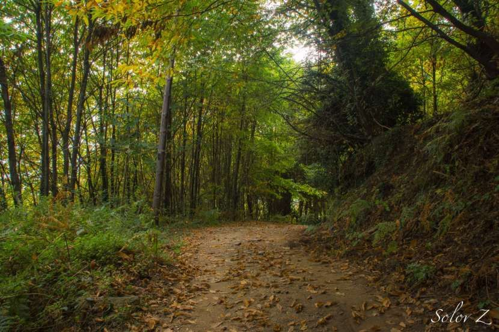
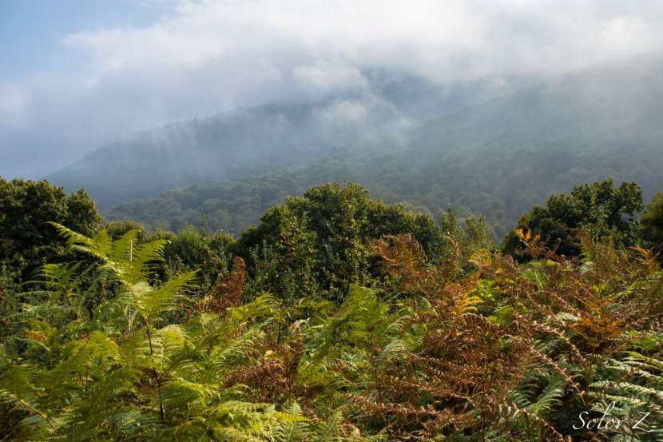
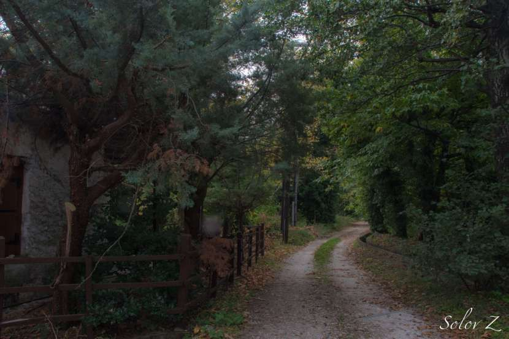
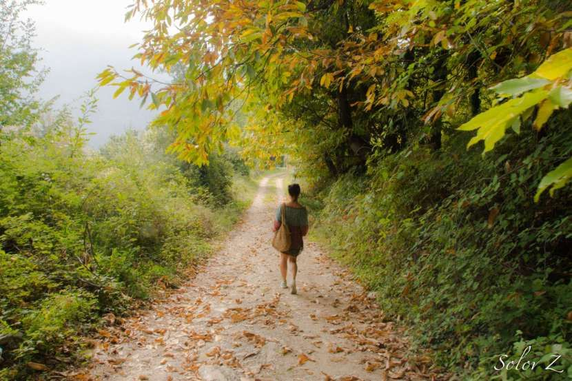
הגענו לרכב והבכי פסק מייד, פיצקה היתה רעבה! אין מה שמנת במבה, ירקות וקצת גבינה לא יפתרו, אז עשינו לנו פיקניק בפרדס ליד הרכב.
מתודלקים אנחנו מחליטים לנסוע ישר לפורטריה ולוילה שלנו, הצוציקים וסבאסבתא נרדמים להם, ואנחנו עוברים את שעת הנסיעה ברוגע. כשעולים להר הפיליון ליד חאניה אנו נכנסים לעננים, מיד נהיה קריר וקצת חורפי, כמות העצים בשלכת גדלה משמעותית, והנה אנו יורדים מעט ותכף מגיעים לפורטריה.
פורטריה הוא אחד הכפרים המפורסמים בחצי האי פיליון, הוא נמצא בצד המערבי של חצי האי, במרחק נסיעה קצרצר מוולוס- העיר הגדולה שהיא שער הכניסה לפיליון. בעיירה יש שפע מקומות לינה מסעדות וטברנות והכל במרחק הליכה, הנוף מקסים, רואים גם את וולוס וגם את הכפר השכן- מקריניצה.
הוילה שלנו- Vila Virginaki נמצאת בכניסה לעיירה (מכיוון וולוס) די במרכז (אבל נראה לי שהכל בעיירה הוא במרחק הליכה קצר). אנו חונים ליד הוילה, מהחניה נשקף נוף משגע של מקריניצה הסמוכה לוולוס (שמעט מוסתרת ע"י העצים), אבל השיא הוא הוילה עצמה! המקום הוא פשוט יצירת אומנות עיצובית, אין פינה בוילה ללא קישוט או חפץ כלשהו הכל מעוצב בצורה עתיקה אבל כלכך בטוב טעם שזה משרה אווירה חמה וביתית כלכך שלא בא לנו לעזוב. הוילה מורכבת מ-3 קומות, בקומה הכניסה יש טרסה ענקית מלאה בעציצים ותוכי חמוד שמצייץ וכמובן נוף משגע למקריניצה, סלון עתיק עם אח ומטבח קטן אך כלכך נעים וביתי. בקומה הראשונה חדרי השינה השירותים והמקלחת (2 חדרי שינה מרווחים) אבל לצערי רק שירותים ומקלחת אחת. ובקומת המרתף נמצא גן עדן לילדים, חדר משחקים ענקי עם שפע של צעצועים לכל הגילאים וכמובן מיטה ענקית לילדים שירצו לישון שם (שלנו ישנים בלולי קמפינג איתנו בחדר), בכל מקום יש בטריות חימום כי בלילה כבר די קר. צמוד אלינו ישנו עוד חדר, צמוד לוילה אך נפרד- כמו יחידת דיור ששם מתארחים זוג ישראלים נחמדים גם כן. בעלי עוד אמר בבוקר שאחרי הוילה המטורפת שהיתה לנו בצאגרדה שנתכונן לירידה ברמה, אולם הוא כלכך טעה! חבל שאחנו פה רק ל-2 לילות, הייתי נשארת לגור פה קבוע!
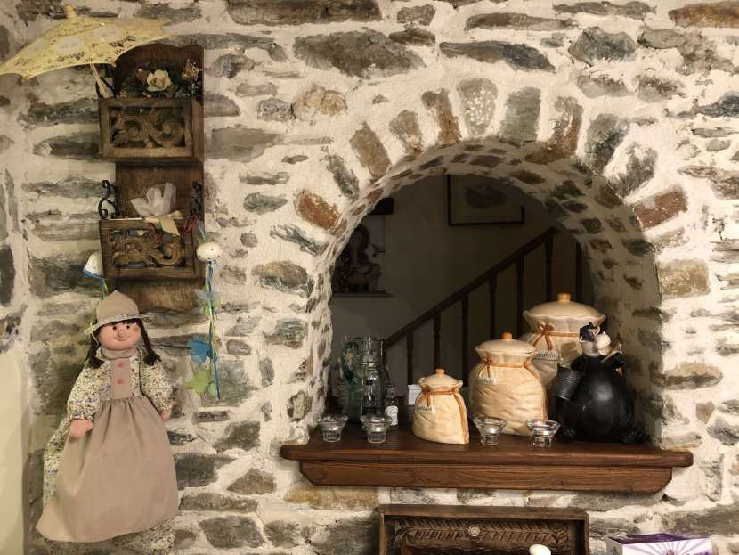
בתמונה- מקריניציה מהמרפסת של הוילה: 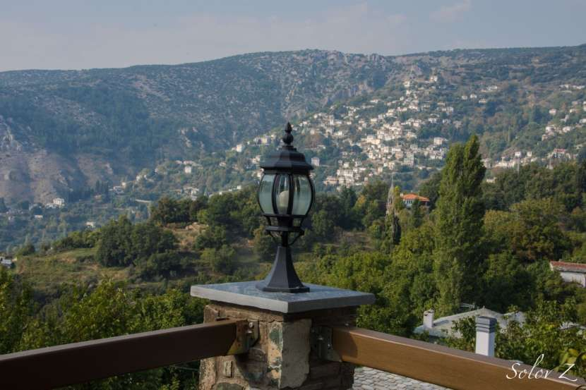
אז אחרי שהתמקמנו הלכנו לחפש אוכל, מצאנו טברנה במרכז העיירה אולם אני פחות אהבתי את האוכל שם, בסך הכל היא היתה בסדר. הצוציקים בינתיים תירגלו מיומנות קפיצה מכל משטח מוגבה קלות שרק מצאו. שבעים (בערך) הלכנו לכיוון גינת השעשועים הקטנה שראינו במרכז העיירה, אחרי שבוע מגיע לצוציקים קצת נדנדות ומגלשות, בדרך עיני קולטות קונדיטוריה עם עוגות שמתחננות שנאכל אותן- שאני אתעלם מכך? מיד נכנסנו והצטיידנו בשתי עוגות לימון, הצוציקים בינתיים נורא התלהבו מכסאות הבאר המסתובבים, וכמובן קיבלו גם עוגיות מתנת בעל הבית. גינת השעשועים פצפונת, 4 נדנדות קרוסלה ומגלשה, אבל זה מספיק לצוציקים שלנו שמאושרים עד הגג! השמש שוקעת בשש בערב וזה הזמן לחזור לחדר לנשנוש ערב מקלחות ושינה.
בערב אני ובעלי מטיילים קצת לכיוון התצפית על וולוס ומקריניצה ומנסים לצלם אותן בחושך, וכמובן מסיימים את היום בקפה בטרסה יחד עם שכנינו לוילה ומעבירים חוויות על הטיול בפיליון.
בתמונה- שקיעה בפורטריה מהטרסה של הוילה:
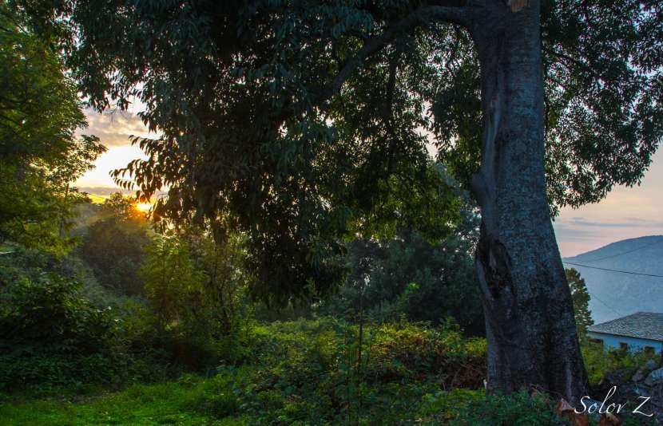
שני צוציקים מאושרים על כסאות בר:
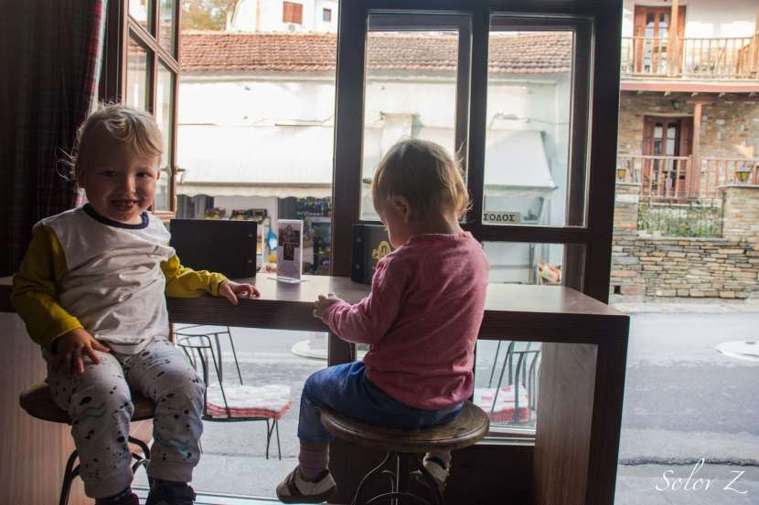
18.10.19:
קמנו לעוד יום יפה, אכלנו ארוחת בוקר תוצרת סבא וסבתא, הצוציקים שיחקו קצת בחצר ואנחנו נהננו מקפה בוקר ועוגה (שבעלי הוילה הכינו לנו וחיכתה לנו על השיש במטבח), את עוגות הלימון שמרנו לנשנוש צהריים…
אחרי שסיימנו להתארגן באיזי, אין לנו מה למהר כי היום מוקדש לטיולים נינוחים, אנו יוצאים לכיוון שביל הקנטאורים.
מדובר במסלול הליכה קליל בתוך יער, כשבדרך עוברים על גבי גשרוני עץ ולצד פלג מים מפכפך, בערך קילומטר וחצי עד למפלון ואז חוזרים חזרה. תחילת המסלול נמצא ממש ביציאה מפורטריה לכיוון מקריניצה, יש שם בית קפה (שסגור בעונה זו) ושער אבן שהוא בעצם שער הכניסה למסלול. יכולנו ללכת ברגל עד תחילת המסלול אולם חבל לנו על הזמן לכן הגענו עם הרכב וחנינו ליד.
ברגע שעברנו בשער נכנסנו לעולם אחר! יער, עלי שלכת פזורים על האדמה, פכפוך הנחל ציוץ ציפורים, אחרי שניה וחצי זה הופר ב"ואוווו" מאוד קולני של הצוציקים שמיד הסתערו על העלים הפזורים. המסלול ממש לא קשה, עד כדי שהצוציקים הלכו אותו לבד, אולם לא הגענו עד המפלון- כי עצרנו ליד כל פלג כדי לזרוק לשם עלים, אבל זה גם לא היתה התוכנית, רצינו פשוט לטייל קצת ברגל ביער יפיפה אם כך המטרה הושגה!
הנה כמה תמונות של המסלול:
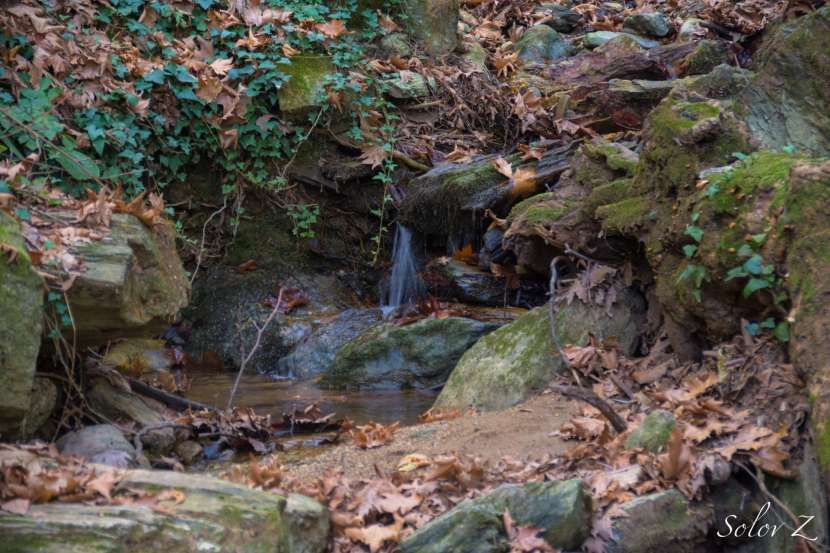
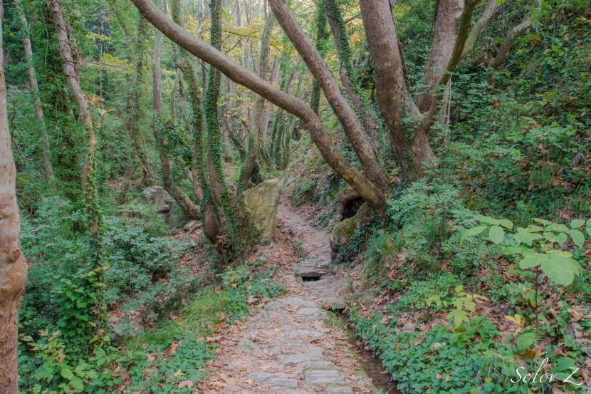
והנה השער:
וצוציק אחד מאושר:
כשסיימנו את המסלול החלטנו לחפש מקום לאכול אז הלכנו לכיכר המרכזית של פורטריה (שנמצאת 5 דקות הליכה משם), כמו כל עיירה בפיליון גם בפורטריה יש עץ דולב מרשים בכיכר וכמובן מסעדות סביבו וים עלי שלכת מפוזרים סביב. השעה 12 אבל הכל סגור, אוכל אמיתי מגישים רק מאחת, בינתיים רק קפה ומאפה- לא כלכך מתאים לארוחת צהריים לקטנים, אז החלטנו לחזור לוילה ולאלתר להם צהריים, בעלי חזר לקחת את הרכב ולעבור בסופר לקנות נשנושים ואנחנו המשכנו ברגל לוילה נחושים לאתר שבילון שיקצר לנו את הסיבוב דרך הכביש. קיצור הדרך לא עלה כלכך יפה- אני הצלחתי לדרוך על סרפד, כאבי תופת! ובסוף הגענו למבוי סתום והיינו צריכים לצעוד חזרה בשיפוע די תלול, אבל אני גאה בצוציקים שהלכו הכל ברגל עד הוילה ולרגע לא ביקשו ידיים. כשאנחנו הגענו לוילה בעלי כבר חזר ושוב נסע לחפש אותנו עם הרכב…
כשהצוציקים הלכו לישון החלטנו לחגוג קצת עם בירה (לבעל) ועוגות הלימון (אני וסבא), ואז סחבתי את בעלי לחפש את קיצור הדרך למרכז העיירה- יש שביל ממש ליד הוילה ופשוט רציתי לראות איפה הוא יוצא בעיירה, אז יצאנו לסיבוב קצר (מאוד קצר כי מדובר בשבע דקות הליכה ואתם במרכז פורטריה), ראינו פאב נחמד בדרך (לשם נחזור בערב) וחזרנו להשתזף עוד קצת על הטרסה.
העוגות:
הצוציקים כלכך התעייפו מההליכה שישנו 3 שעות והיינו צריכים להעיר אותם, אז אחרי קימה והתארגנות יצאנו למקריניצה- העיירה הסמוכה לפורטריה (שאנו צופים בה מהטרסה שלנו), ונמצאת 2 ק"מ מפה.
מקריניצה היא ביקור חובה בפיליון, מדובר בעיירה מקסימה, עם סמטאות צרות, מסעדות וטברנות חמודות וכמובן הנוף המדהים שנשקף ממנה על העיר וולוס ומפרץ פגסטיקוס. הרבה בזכות הנוף החלטנו ללכת לעיירה דווקא בשעת הערב, כדי לטייל בסמטאותיה לקראת השקיעה.
אנו מחנים בחניה של העיירה, כי אין כניסה של רכבים למרכז העיירה, ומתחילים ללכת ברגל, הצוציקים מיד מוצאים ברזיה (בכל פיליון מפוזרות מעין מזרקות שמהן יוצאים מים לשתיה) ועסוקים בלהשפריץ לכל כיוון, אנחנו בינתיים נהנים מההליכה בין הסמטאות והנוף היפה שנשקף על מפרץ פגסטיקוס, לצערי היום מעט אביך ככה שאין ראות טובה אבל זה לא פוגע לנו בהנאה!
גם במקריניצה, כמו ביתר העיירות בפיליון יש כיכר מרכזית ובה עץ דולב, כאן יש שניים, אחד חלול מבפנים (אבל עדיין צומח ומרשים) והשני נפרש כמניפה על הכיכר שבנויה כמעין מרפסת, לא פלא שהעיירה מכונה "המרפסת של פיליון" זה ממש ככה!
גם פה בכיכר יש מזרקה נחמדה, הצוציקים מיד מבדרים את עצמם בניקיון הכיכר מעלי שלכת ומעבירים את כולם לתוך המזרקה…
הנה כמה תמונות ממקריניצה:
אנחנו רעבים, אז החלטנו לחפש לנו מסעדה נחמדה ואכן מצאנו כזאת ממש כמה מטרים אחרי הכיכר, המסעדה נקראת Απόλαυση והיא פשוט מדהימה! הגענו בדיוק בזמן השקיעה, הנוף פשוט משגע, לא היו כמעט אנשים, ישבנו בחוץ במזג אוויר נעים (קצת קריר אבל עם ג'קט זה מושלם), האוכל היה טעים, אפילו הצוציקים נהנו לאכול שם (אחרי שפיצקה נתנה לנו את הופעתה היומית בצרחות והתעקשות לאכול רק על הידיים של אמא ולטייל תוך כדי האוכל, מזל שאח שלה הצליח לשכנע את הגברת לטעום מהמנות, ופתאום פיצקה אוכלת בלי בעיות). כשהשמש שקעה והתחיל להחשיך המקום נראה עוד יותר כמו גלויה. טיילנו עוד קצת ברחובות העיירה, שבעונה זו די שוממים אבל בקיץ כנראה שוקקי חיים וחזרנו לרכב ומשם לוילה שלנו למקלחות ולילה טוב לצוציקים.
הנוף מהמסעדה:
מקריניצה בלילה:
אני ובעלי שסוף סוף יכולים להנות משירותי בייביסיטר, הלכנו לשתות בפאב שראינו בצהריים, שגם הוא היה די שומם בגלל שהעונה נגמרה, פטפטנו עם בעלת המקום שסיפרה לנו על פורטריה בחורף שהיא מכוסה שלג ומלאת תיירים בעונת דצמבר ינואר הרבה בזכות הסקי, יש אתר סקי אחד בעיירה חאניה שהיא אגב לא אחת מ-24 העיירות העתיקות של פיליון אלא שימשה בעבר כמקום מנוחה למי שחוצה את ההר ממזרח למערב וההפך ונקראה חאני כלומר עצירה ללילה ומשם נגזר שמה כיום. נשמע רעיון מעולה להגיע לפה בשלג, הוילה שלנו כלכך מזמינה חמימה ונעימה שבהחלט נחזור לשם לחופשה רומנטית בחורף (לצערי לא בעתיד הקרוב).
חזרנו לוילה עייפים ומרוצים אחרי יום מוצלח!
19.10.19:
היום אנחנו עוזבים את פיליון, אחרי שהיה של שבוע, עם הרבה הרבה טעם של עוד! מצפה לנו נסיעה של שעתיים וחצי לכיוון העיירה קלאמבקה ומנזרי מטאורה, אבל החלטנו לעשות את הנסיעה בצהריים על זמן השנ"צ של הצוציקים, משמע יש לנו עוד כמה שעות בבוקר לבלות בפורטריה. אחרי התארגנות ואריזות נסענו למרכז העיירה, סבא וסבתא לקחו את הקטנים לגינת המשחקים בזמן שאנחנו זכינו לקצת זמן שיטוט זוגי ברחובות העיירה, קנינו קצת מזכרות והחלפנו את סבאסבתא. לצערי לא תמצאו בפורטריה מקום אחד שמגיש צהריים לפני השעה 12 וחצי אחת, זמן שתכננו כבר לצאת לדרך, לכן אנחנו מחליטים לאכול משהו בקטנה- כמו קרפ צרפתי למשל (הצוציק ממש אוהב קרפים עוד מהטיול שלו לאלפים הצרפתים), יש בדיוק בית קפה במרכז העיירה ושם אנו מנשנשים קרפים (לא כלכך טעימים) ומוכנים לצאת לדרך.
הנסיעה לקלמבאקה די משעממת, מישורית ונופים די משמימים כולם חוץ ממני ובעלי ישנים (מאז ימי הצבא אני לא מסוגלת לישון ליד הנהג, חייבת לודא שהוא לא נרדם). מס' קילומטרים לפני העיירה אנחנו מבחינים בעמודי הסלע של מטאורה ומיד מתעוררים כולם לצפות בפלא. ממש מעל קלמבאקה ניתן לראות את אחד המנזרים, החלטנו לעצור בדירה ומשם ללכת לאכול ואז לנסוע ולראות את המנזרים בשקיעה (קראתי שזה ממש מומלץ) וזה מה שעשינו.
בתוכנית הטיול המקורית היינו אמורים להיות רק 5 ימים בפיליון, משם למטאורה ומשם למרחצאות פוזר עד שהחלטתי לשנות מעט את התוכנית ולהוסיף ימים לפיליון (החלטה חכמה כי גם ככה לא ראינו רבע ממה שתכננתי), אבל בגלל השינוי הייתי צריכה להחליף את הדירה שלנו במטאורה כי היא לא היתה זמינה לתאריכים החדשים. בחרנו את- Eagle's Family Apartment Kalampaka שקיבלה ביקורות ממש טובות בבוקינג וגם שזו דירת 3 חדרים מרווחת במרכז העיירה (האמת שהעיירה כלכך קטנה שהכל בעצם במרכז, אבל לא ידענו זאת אז), הדירה היתה האכזבה של הטיול, אמנם נקיה גדולה ומרווחת אבל בהשוואה לוילות המדהימות שהיינו בהם הדירה היתה כמו דירת 3 חדרים להשכרה בפתח תקוה, אין טיפת עיצוב פשוט זרקו את כל הרהיטים שרצו לזרוק מהבית לדירה, קירות במקלחת מתקלפים, אין מספיק מים חמים, מטבחון לא מאובזר בכלל, בקיצור סביר להעביר שם לילה אבל אני בטוחה שאפשר למצוא מקומות הרבה יותר טובים ונעימים (קלמבאקה לא יקרה כלל), אם כבר הייתי ממליצ לישון בקסטארקי העיירה הסמוכה שנראית הרבה יותר אותנטית. לפחות יש חדר משחקים לקטנים, שמיד מסתערים עליו.
אז אחרי שפרקנו את הדברים הלכנו ברגל למרכז העיירה (בדיוק 5 דקות), שם מצאנו טברנה נחמדה עם אוכל סביר (לא WOW אבל אכיל) כי רצינו להספיק לסיבוב המנזרים שלנו. שבעים ומרוצים יצאנו לדרך, ממרכז העיירה נוסעים לכיוון קסטארקי ומשם פשוט ממשיכים עם הכביש, מדובר בכביש מעגלי שיקח אתכם חזרה לקלמבאקה, או שפשוט אפשר להסתובב ולחזור ברגע שמיציתם.
טוב אז עכשיו קצת על מטאורה: מצוקי מטאורה הם תופעת טבע ייחודית של סלעי בזלת ענקיים בגובה של מאות מטרים, חרוטיים המתנשאים לגבהים עצומים יוצאים מהאדמה ועל ראש רובם לפחות, מצוי מנזר. ההתיישבות במטאורה החלה עוד במאה ה-11 אז מספר נזירים מצאו את המקום ומאימת הפשיטות של הטורקים גרו במערות שבתוך המצוקים. המנזרים הראשונים נבנו בין המאה ה-11 ל-14, היו כ-24 מנזרים בהתחלה אולם כיום נותרו 6. אגב, העלייה לנזרים בזמנו היתה ע"י סולמות חבלים או סל, חבלים שהיו מוחלפים רק "עם סימן מאלוהים"- רק תתארו כמה אנשים נפלו מטה עד שאלוהים אותת שצריך להחליף את החבל. גם כיום חיים נזירים במקום- סה"כ 15 גברים ו41 נשים (אם אני זוכרת נכון), המנזרים פתוחים לביקור אולם חשוב להתעדכן באילו ימים איזה מנזר פתוח כי לא כולם פתוחים כל הזמן. אנחנו ויתרנו על כניסה למנזרים (חבל שהצוציקים יהרסו את מה שנשאר שם).
כאמור עלינו לכביש המנזרים והתחלנו לנסוע בין המצוקים המרשימים, עצרנו לצילומים, יצאנו לשוטט ולתצפת, המנזרים בשקיעה פשוט מרהיבים ביופיים, ולא רק זה אלא שבשעה זו אין אוטובוסים מפוצצי תיירים שגודשים את המקום (ניווכח מחר עד כמה זה מזעזע)- אתן לתמונות לדבר במקומי.
לא עברנו את כל המנזרים (נשאיר חלק למחר), ונסענו חזרה לדירה להשכיב את הצוציקים לישון (כי כבר שעת השינה שלהם הגיעה). סבא וסבתא יצאו לשוטט בעיירה בזמן שהיינו עסוקים במקלחות והרדמות, וחזרו בזמן כדי לשחרר אותנו למנת הבילוי הזוגי שלנו.
אולי בגלל שהיום יום שבת בערב (ולמחרת לא עובדים), אבל העיר פשוט התעוררה לחיים, כל המרכז שוקק חיים, מסעדות, מוזיקה פאבים, אווירה צעירה וכיפית שהחזירה אותנו לימים טרם הצוציקים. מצוקי מטאורה נשקפים מכל מקום בעיירה ומוארים ע"י תאורה ייחודית, האוויר נעים, לא חם ולא קר. שוטטנו לאורך השדרה המרכזית, קנינו מאפים ועוגות לבוקר וגם נשנושים לא.בוקר (כי סיימנו את כל האוכל שלנו עוד בפיליון ושכחנו לעצור שוב בסופר), בסוף התיישבנו באחד הפאבים החמודים ופשוט כייפנו עם דרינק נחמד. חזרנו לדירה עייפים ומרוצים.
20.10.19:
לילה קשה עבר על כוחותינו. הצוציקית התעוררה בחמש בבוקר (עוד לפני התרנגולים שנראה לי שהתעוררו מהצרחות שלה), גם אנחנו ישנו גרוע כי המיטות פשוט זוועה והיה חם/קר בחדר. אחרי פיאסקו צרחות במשך שעה הצלחתי למלט את בעלי לחדר הסמוך שישן קצת כי הוא צריך לנהוג, הקרבתי את עצמי להתעללות הצוציקים שחשבו שאני טרמפולינה במיטה סופר לא נוחה!
בזמן שבעלי ישן האכלנו את הטרוריסטים הקטנים ושלחתי אותם עם סבאסבתא לגינת השעשועים (איזה מזל שגם פה יש אחת במרחק הליכה קצר), בזמן הזה אני ובעלי ארזנו את התיקים התאוששנו טיפה מהלילה הקשה.
היום אנחנו חוזרים לסלוניקי (נסיעה של שעתיים וחצי), ושוב החלטנו לעשות את הנסיעה על זמן השנ"צ של הקטנים. בזכות הלילה הנוראי השעה כבר עשר וחצי כשאנחנו יוצאים לסיים את סיבוב המנזרים שלו, איזה טעות! בשעה הזו המקום פשוט מפוצץ באוטובוסים של תיירים, וזו עוד לא העונה בכלל, לא רוצה לדמיין מה הולך שם בקיץ, אין פינה אחת שאפשר לצלם תמונה מבלי לתפוס עוד 50 איש בפריים. אז סיימנו את ההקפה ונסענו לתדלק ומשם לסלוניקי, נסיעה של שעתיים שעברה מעולה והצוציקים ישנו היטב.
מטאורה ביום וקלאמבקה ברקע (תמונה בודדת שהצלחתי לצלם בלי ים אנשים):
ללילה האחרון שלנו החלטתי להתפנק והזמנתי לנו שני חדרים (לנו חזר מחובר ועוד אחד לסבאסבתא) במלון- Grand Hotel Palace מלון 5 כוכבים אולם נמצא 4 ק"מ ממרכז העיר (לא הצלחתי למצוא משהו נחמד במרכז העיר עצמה וגם קראתי שהרבה מתלוננים על רעש מהמסעדות). קיבלנו אחלה חדרים אז עלינו להתמקם ולנשנש משהו ומשם התארגנו ונסענו לטיילת של סלוניקי.
סלוניקי היא העיר השניה בגודלה ביוון ואחת מערי הנמל החשובות ביוון, לדעתי די משעממת אבל למי שאוהב סביבה עירונית של פאבים מסעדות המקום גן עדן. היום יום ראשון והטיילת הומה אנשים, גם עם חניה הסתבכנו כי כל החניונים במרכז היו מלאים אז חנינו בחניון של התיאטרון (עשר דקות הליכה מהטיילת).
הלכנו לכיוון המגדל הלבן- סמל העיר, יש במקום דשא שמלא עד אפס מקום במקומיים שיצאו להשתזף, הצוצקים היו עסוקים במרדף אחרי יונים.
משם המשכנו על הטיילת עד שהגענו למרכז השוקק, המלא עד אפס מקום במסעדות ובארים. אחת המארחות המליצה לנו על טברנה חמודה במרחק הליכה קצר שנקראת Balconaki, טברנה יוונית חמודה, עלינו לקומה השניה בדיוק בזמן לצפות בשמש השוקעת ולראות את המוני האנשים המטיילים ברחובות (יום ראשון כבר אמרתי?), היינו ממש יכולים להנות במסעדה אילולא הטרור ששני הקטנים החליטו לעשות לנו, צרחות, עצבים, בכי, פיפי, קקי, שוב פיפי שוב קקי שוב בכי וצרחות. לעד הארוחה תיזכר כארוחה הנוראית ביותר שהיתה לנו אי פעם (לוקח בענק את ארוחת הצהריים הנוראית באלפים הצרפתים) וחבל, כי המקום ממש עם אווירה נעימה במיוחד בשקיעה. ממש מתערבבים לי הזכרונות בין הרוגע והיופי של השמש השוקעת והמוזיקה הנעימה במסעדה, עם צלילי הצרחות של הטרוריסטים הקטנים. סחוטים כמו שני לימונים (סבא וסבתא כנראה בעולם משל עצמם כי הם באופוריה) צעדנו שוב על הטיילת לכיוון ביניין התיאטרון וחזרה לרכב. וכך הסתיים היום האחרון בטיול שלנו.
21.10.19:
אחרי ארוחת בוקר מפנקת במלון, אנחנו יוצאים לכיוון השדה להחזיר את הרכב ולטיסה שלנו שיוצאת באחת וחצי. שימו לב שביום שני (כמו ראשון אצלנו) כדאי לצאת לפחות שעה וקצת לפני הזמן כי יש פקקים רבים בדרך לשדה.
וכך תם הטיול שלנו.
כמה טיפים לטיול עם פעוטות:
רכב: אנחנו תמיד שוכרים רכב, שכרנו דרך rent a car רכב של 7 מקומות, האמת שהיה די צפוף לשישה (4 מבוגרים ו2 פעוטות עם מזוודות ועגלות), אבל בכבישים המפותלים של פליון רכב גדול יותר היה מסבך יותר את הנהיגה. כסאות בטיחות שכרנו עם הרכב, קיבלנו אחלה כסאות. לגבי הכבישים בסך הכל הם טובים אבל! מאוד מאוד מפותלים והמון ירידות תלולות שאחר כך צריך לעלות אותן, לכאורה הכל קרוב אבל אין גישה בין החופים ולכן תמיד צריך לעלות להר ולרדת ממנו כדי להגיע לחוף או עיירה סמוכה שנמצאת 2-3 ק"מ משם ויש לקחת את זה בחשבון בתכנון הנסיעה, שלרוב לוקחת כ-20 דקות להגיע לחופים הקרובים לטצגראדה.
ציוד: אז כאמור הצוציקים בגמילה לכן לקחתי 2 סירים קטנים וה-מ-ו-ן תחתונים ומכנסיים, ממליצה גם לקחת המון שקיות בכדי לשים כביסה מלוכלכת עד שאפשר יהיה לשטוף (לקחתי שקיות אוכל קטנות). ביגוד קיץ וחורף כי ביום חם ובלילה קר כולל סנדלים ונעליים סגורות לסתיו. בוילה הראשונה היתה מכונת כביסה (שהופעלה כל ערב), בשאר המקומות לא היה אז כיבסתי זריז בכיור וייבשנו על הבטריות בדירה (מזל שכבר קריר ומדליקים בטריות לחימום, מתייבש צ'יק צק). לקחתי גם קצת ספרים אהובים וצעצוע שרגילים לישון איתם. מחצלת חובה! הצילה אותנו כבר בהמון טיולים.
טיפ להורים חששניים כמוני- ווקי טוקי, במקרה ומדובר בוילות גדולות או בוילה עם קומות, פשוט משאירים אחד בחדר והשני לידכם, ככה כשהם ישנים אתם רגועים שאם חלילה יבכו תשמעו אותם ולא צריך לרוץ לחדר לוודא שהכל בסדר.
אוכל: הם כבר גמולים מתמל אז לא צריך היה לסחוב בקבוקים וקופסאות. במסעדות יש הכל מהכל וטעים מאוד! ככה שתמיד מצאנו מה לתת להם לאכול. הצטיידנו גם הרבה בסופרים בפירות ירקות וכמובן במבה- המציל הלאומי! כסאות אוכל- במעט מאוד מקומות היו כסאות אוכל אבל הסתדרנו, אחד ישב לבד על הכסא ואכל והגברת ישבה קבוע על אמא לאכול (כי ככה נוח לפרינססה
חיתולים- לקחנו רק כמות לפי מספר לילות (עדיין לא גמולים לילה), אבל לא הייתי מסתמכת על לקנות שם בסופר, הסופרים בפליון דומים יותר לקיוסק השכונתי רק מצרכים בסיסיים. גם לא ראיתי עמדות החתלה בשום מקום, אנחנו פשוט החלפנו תחתונים בשירותים (כשהיה) או בטבע. לפחות הילדה למדה לעשות פיפי באסלה
מנשאים: לא לקחנו את מנשאי הגב הקשיחים כי היה לנו יותר מידי ציוד ולא התכוונו לעשות איתם מסלולים ארוכים, אלא מנשאים שאפשר לשים בהם על הגב (קיבלנו מתנה של baby care מהונגקונג- לא ראיתי כאלה בארץ) בלי קשר כדאי לקחת מנשא כי הירידות לחופים די תלולות ובחלקם יש המון מדרגות, מנשא הציל אותנו בקטעים האלה. וכמובן אם רוצים לעשות מסלולי טיול (ויש שפע כאלה) כדאי מנשא. אנחנו עשינו איתם את שביל הקנטאורים בפורטריה ללא מנשאים והם הלכו ממש מצויין (מצד שני לא באמת עשינו את כל המסלול עד סופו).
לסיכום:
בניגוד לרוב המטיילים שמשלבים את פליון עם כפרי זגוריה, החלטנו להתמקד רק בפליון, החלטה שהיתה נכונה עבורנו, גם ככה לא ראינו רבע ממה שיש לחצי האי הזה להציע, ואם היינו משלבים עוד יעד פשוט היינו מבלים המון המון זמן ברכב בנסיעות וחבל. היינו מחוץ לעונת התיירות וזה היה מורגש בעומס האנשים- היו בעיקר ישראלים, החופים היו כמעט ריקים מאדם ובכללי היתה אווירת סתיו קסומה, רוב מקומות הלינה עדיין עובדים וכן גם רוב המסעדות (אם כי היו כמה שכבר נסגרו), לא היה גם עומס בכבישים (לא נראה לי שנעים לנסוע בכביש צר עם עוד הרבה רכבים אחרים). זכינו למזג אוויר מדהים- מספיק חם ביום כדי לשחות (המים קרים כשנכנסים אבל תוך שנייה מתרגלים, גם הצוציקים נהנו מטבילה בים) ובערב קריר אבל לא קר (ג'קט לנו, פליז לילדים והיה מעולה). פיליון מדהימה, אבל למי שמחפש בטן גב חופים וטברנות זה ממש לא היעד בשבילו.
תודה שקראתם.